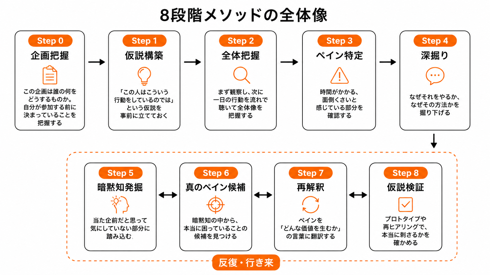
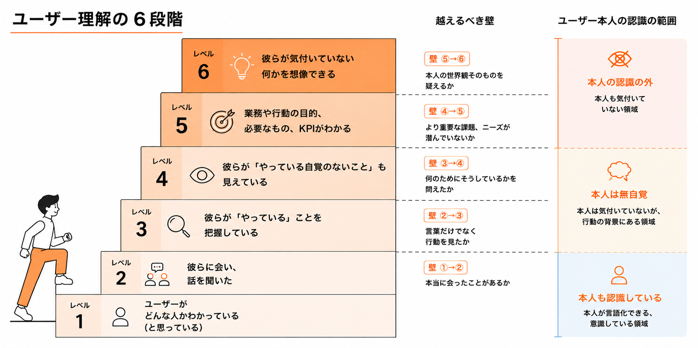
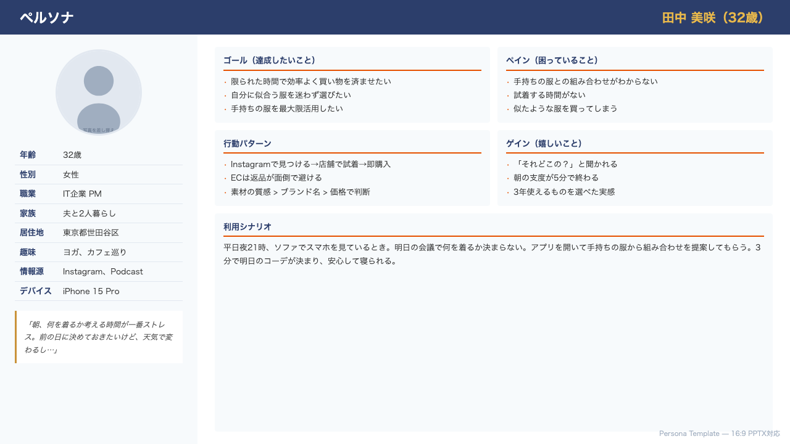
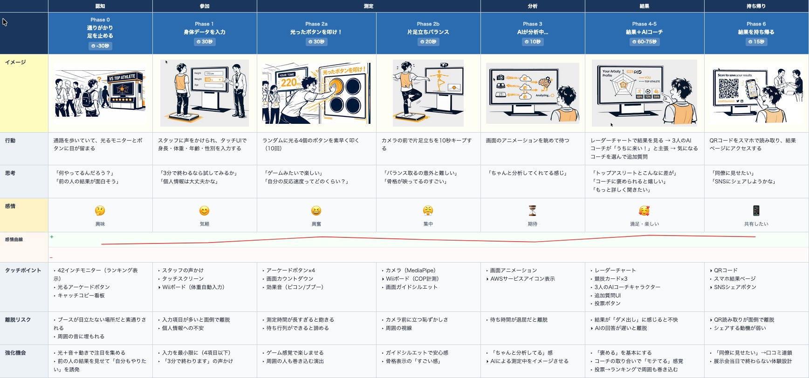
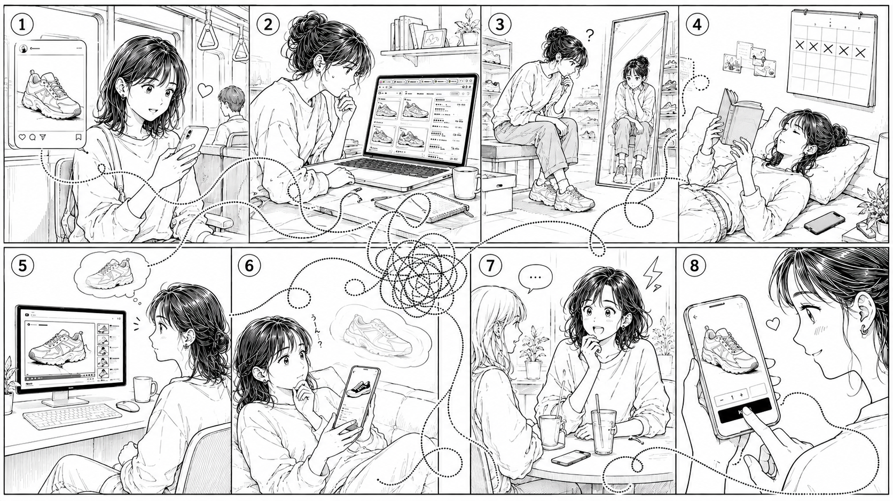
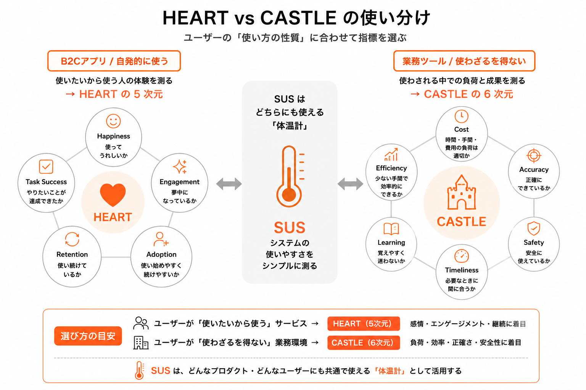
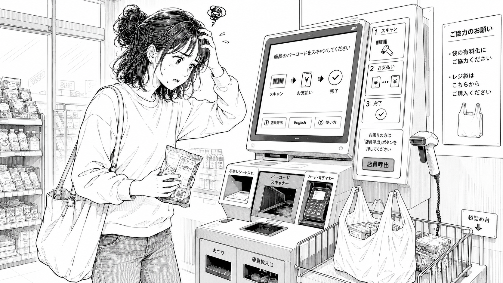
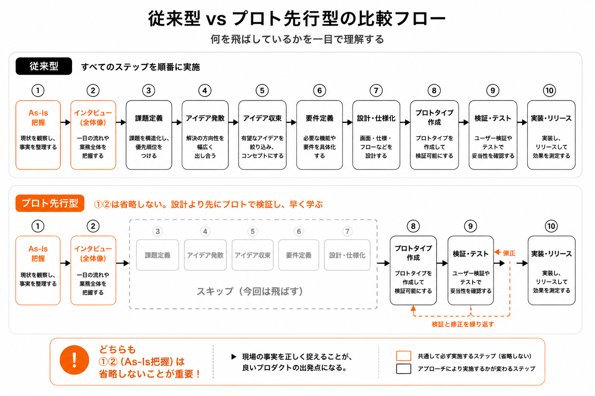

はじめにお伝えしておきたいことがあります。これは教科書ではありません。プロダクトデザイン科出身なので、UI/UXを大学などで体系的に学んだ人間が書いたものではなく、25年あまりの実務の中で試行錯誤してきた一人の経験のメモです。それでもユーザーにとって良いものになるように、いわばユーザーのための護民官（古代ローマで、権力者の決定から平民を守るために置かれた役職です）であると意識し、UIデザイン、UXデザインに対して試行錯誤を繰り返してきました。組織の論理が優先されそうなとき、ユーザーの側に立って声を上げる。そういう役回りだと思ってきた、ということです。
この本が何の話なのか、先に言っておきます。手法やプロセスの解説書のように見えるかもしれませんが、根っこにあるのはもっと単純なことです。「自信を持って決められるか」。それだけです。
企画でも設計でも、私たちは絶えず何かを決めないといけません。どの案で行くか、何を削るか、誰に向けて作るか。決めるには情報が要ります。でも、ただ情報を集めればいいわけではない。集めた情報が、「これでいく」と腹をくくれるだけの確信になっているか。そこが分かれ目です。
しかも、自分が確信を持てただけでは、まだ足りません。その確信を、企画者や上司や経営者にも伝えて、「なるほど、確かにそうだ」と思ってもらわないと、アイデアは形になりません。自分が確信を持つこと。その確信で人を動かすこと。この二つができて初めて、ユーザーのために良いものを世に出せます。
そして確信は、誰かがまとめた調査結果を読むだけでは、なかなか手に入りません。自分でユーザーの姿を見て、その暮らしや仕事の流れを知って、その中に隠れている何か、本人さえ気づいていない何かを、自分の目で見つけたとき、初めて「これは本当だ」と思える。情報を確信に変えるのは、自分が直接ユーザーを知った、という事実です。
だからこの本は、リサーチの手順を並べた本というより、「ユーザーのために自信を持って決め、それを通すために、ユーザーをどう知ってきたか」をもがきながら綴った記録です。手法は、その確信にたどり着くための道具にすぎません。
UXデザインやユーザーリサーチを始めたばかりの頃、「この機能、どう思いますか？」「このUI、使いやすいですか？」「何か困っていることはありますか？」こんな質問をしてばかりいました。しかし実は、こういう聞き方では本当に欲しい答えはほとんど返ってこなかったんです。相手は大抵、「いいと思います」「特に問題ないです」「便利そうですね」と答えます。そしてプロジェクトは進み、会議では「ユーザー評価も良好でした」と報告されます。でも、リリース後に使われない。これは珍しい話ではありません。
ユーザーは嘘をついているのか？ 違います。むしろ、多くのユーザーは誠実です。問題は、人は自分の行動理由を思っているほど理解していないということです。さらに言えば、人は質問されると、その場で「それっぽい理由」を作ってしまいます。なぜそのアプリを毎日使っているのか、なぜその操作が面倒なのか、なぜその商品を好きなのか。こうしたことを、本人は言語化できていないことが多い。だから、直接聞いても、本質には辿り着けません。
有名な話があります。「もしユーザーに何が欲しいか聞いていたら、彼らは"もっと速い馬"と答えただろう」。本当にそうだったかはさておき、本質的な話です。人は、今知っている世界の中でしか答えられません。だから、自動車、スマートフォン、SNS、動画配信、AIエージェントのようなものは、登場前にはうまく説明できなかった。ユーザーの言葉をそのまま集めるだけでは、新しい価値には届かないことがあります。
余談ですが、この「速い馬」の言葉はヘンリー・フォードが言ったとよく紹介されますが、本人が実際にこう言った記録は残っていません。後世の作り話とされています。それでも語り継がれているのは、言葉の真偽とは別に、この比喩が「人は知らないものを欲しがれない」という実感を見事に言い当てているからでしょう。出典の確かな例で言えば、Theodore Levittの「人は1/4インチのドリルが欲しいのではなく、1/4インチの穴が欲しいのだ」が同じことを指しています（第3章で改めて触れます）。
UXリサーチとは、ユーザーの発言を集める仕事ではありません。本当にやっているのは、行動・違和感・迷い・工夫・諦めの中から、まだ言葉になっていない何かを見つけることです。だから観察が必要になります。だから一日の流れを聞きます。だから「なぜ？」を何度も考えます。
ふとシャーロック・ホームズがやっていることがこれなのでは？と感じたことがあります。彼は相手の説明や話を真に受けない。所作、服の袖のほつれ、靴の綺麗さ、話し方、匂いなどから、説明していない事実をどんどん明るみに出していく。私たちが行っているユーザーの声の裏にある何かを探る作業と、やっていることは同じではないかと思うのです。
実際の現場では、こういうことが起きます。ある人は「特に不満はありません」と言います。でも観察すると、毎回同じ確認をしている、何度も画面を行き来している、紙にメモしてから入力している、エラーを怖がって慎重に操作している。本人にとっては、それが「普通」になっている。だから不満として認識されていない。でも、その3分が毎日、毎週、毎月積み重なっている。そして、その"当たり前"の中に、本当のペインが隠れています。
UXデザインは「見た目を良くする仕事」ではありません。UIを綺麗にすることも重要ですが、それだけではありません。「この人は、どこで困っていて、何を求めていて、どうすれば自然に動けるようになるのか」を理解すること。つまり人間理解の仕事です。
しかし、ユーザー理解は難しい。人は本音を言わない、組織は忙しい、会議は結論を急ぐ、アンケートは安心感を生む、「いいですね」が大量に集まる。さらに厄介なのは、チーム全員が誠実なのに間違った方向へ進むことです。誰も嘘をついていない。でも、本当の問題には辿り着いていない。これはUXの現場で何度も起きます。
本書の中には、教科書的な手法に対して「しっくり来ない」と思いつつ、それでも説明には使えるので活用している、という内容もあります。理想と現実のあいだで揺れた話、組織の中で諦めた話、最初は数値目標で考えていたのに途中で順序が逆だったと気づいた話。そういうものを、出来るだけ生のまま書きました。
読み手の皆さんも、ここに書かれた手順を覚える必要はありません。自分の現場で、自分のやり方を見つけてください。本書がその手がかりに少しでもなればと思っています。
この文書は1度で全部わかる必要はありません。情報密度が高いので、段階に応じて戻ってきてください。
各節末に金色で出てくる【学術用語】は「他の人と話すときの共通語」です。覚えなくていい。同じ概念で別の名前を使う本に出会ったとき、「あ、これか」と気づくための索引だと思ってください。
最初に詰まりがちな質問は、巻末のFAQに集約しています。読みながら引っかかったらそちらを参照してください。
UXリサーチとデザインの過程は、大きな木や石から彫刻を削り出すような作業です。最初は何が現れるのかわかりませんが、徐々にヒアリングや検証の過程で姿が彫り出されていきます。この調査や検証によって現れるものが変わってくるのが面白いところです。
先に、この本の性格をはっきりさせておきます。これは整然とした手順書ではありません。これから前提確認（Step 0）と8つのフェーズ（Step 1〜8）を紹介しますが、これは「この順番でやればうまくいく」というレシピではなく、現場でもがいてきたことを後から振り返って、無理やり地図の形にしたものです。実際の仕事は、もっと行ったり来たりして、泥臭い。特にStep 5〜8は一方通行ではなく、行き来しながら深まっていきます。
| Step | フェーズ名 | 概要 |
|---|---|---|
| 0 | 企画把握 | この企画は誰の何をどうするものか。自分が参加する前に決まっていることを把握する |
| 1 | 仮説構築 | 「この人はこういう行動をしているのでは」という仮説を事前に立てておく |
| 2 | 全体把握 | まず観察し、次に一日の行動を流れで聴いて全体像を把握する |
| 3 | ペイン特定 | 時間がかかる、面倒くさいと感じている部分を確認する |
| 4 | 深掘り | なぜそれをやるか、なぜその方法かを掘り下げる |
| 5 | 暗黙知発掘 | 当たり前だと思って気にしていない部分に踏み込む |
| 6 | 真のペイン候補 | 暗黙知の中から、本当に困っていることの候補を見つける |
| 7 | 再解釈 | ペインを「どんな価値を生むか」の言葉に翻訳する |
| 8 | 仮説検証 | プロトタイプや再ヒアリングで、本当に刺さるかを確かめる |

実務では、白紙の状態からリサーチを始めることはほとんどありません。誰かが企画した何かに、途中から参加する。そのとき最初にやるのは、「この企画は誰の何をどうするものなのか」を把握することです。
企画の全体像を把握しないままヒアリングに入ると、「何を聞けばいいか」が定まりません。仮説を立てるにも、まず企画の前提を知らないと、的外れな仮説しか出てこない。
逆に言えば、企画把握の段階で「この企画、そもそもユーザーのことを考えていないな」と気づくこともあります。それは第11章で書く「壁①丸投げ」「壁②無視」の入り口です。気づいたら、そこで声を上げるのもデザイナーの仕事です。
案件によっては、UXリサーチャーやリサーチ会社がユーザー調査や聞き取りをした結果が既にあり、その結果に基づいていろいろ議論・検討された企画に参加することがあります。「ユーザーは本当のことを言えない」という立場からすると、「その調査、本当に大丈夫なの？」と思ってしまいます。
この疑念があるとUXデザインを進めるのが不安になります。だから、できる限りこの調査や現場での観察に自分も参加するべきだと思っています。伝聞ではなく、自分の目で見て、自分の耳で聞いたことを判断の根拠にしたい。同じ答えを聞いても、その業界を知っている人と知らない人では拾えるものが違います。
「既にある調査結果を鵜呑みにしない」と同じ構造で、「業界の常識」も鵜呑みにすると危ない、という話です。
ある印刷会社向け製品の企画に参加した時のことです。業界のデファクトスタンダードがX社なので、X社の製品の仕様や使い勝手に極力寄せて開発していくという方針の説明を受けました。
その頃、私はそもそも印刷会社がどんな仕事をしているのかよく知らなかったので、広告代理店や出版社の知人に頼んで複数の印刷会社を見学しました。そこで現場の人たちがX社の製品を使っているのですが、実は彼らはX社の製品に辟易していました。とにかく使いにくいと。
こんな風にわかりやすく言葉に出してくれるケースは少ないかもしれませんが、その使いにくさを自分も目の前で説明されながら確認しているので、明らかにまずい部分は要件や画面遷移図を含めて修正を提案しました。この時、現場で見たことをレポートにまとめていたので、他の人たちも「一旦決めたことなので面倒だな」という空気はありましたが、話を聞いてくれました。
「デファクトに寄せる」は一見合理的な方針ですが、デファクトがユーザーに愛されているとは限りません。自分で現場を見に行かなければ、使いにくいものを忠実にコピーするところでした。
ただし、ここで大事なのは姿勢です。もし彼らがあまり顧客のことを検討していなかったりしても、「UXデザインはこうでなくてはいけない」「こんなことではいけない」などと押しつけるのは良くありません。
すでに企画者やプロジェクトリーダーは、様々な検討や困難を経てここまで企画を進めています。その苦労には敬意を払うべきです。いきなり「こんな企画やプロセスは良くない」と新たに参加したデザイナーが捲し立てても、チームメンバーの士気が下がるだけです。
まずは彼らがやろうとしていることを理解する。誰が顧客で、どんな環境で、どんな状況にあるものを、この製品やサービスでどのように変えようとしているのか。それを把握した上で、UXデザイナーに求められているものは何か。その目標の共通認識を持つことを目指します。
【学術用語】 プロジェクトブリーフ、ステークホルダーインタビュー、デザインブリーフ
デザイナーにしろ、新規事業企画にしろ、自分が好きな分野、得意な分野の業務ばかりではありません。それでも対象ユーザーが暮らす世界はどんなものなのか、どんな業務を遂行しているのか、何が問題なのか。これらを明らかにしていく必要があります。
そのためには何が必要でしょうか。
対象ユーザーの話を聞いて何の話なのか想像できる程度には、予習が必要です。これができていないと、彼らに「本気ではない」と見抜かれてしまいます。
第4章のカーオーディオの話で紹介しますが、自分自身がユーザーである場合は予習が不要な場合もあります。でもそうでない場合。たとえば医療現場のシステムを設計する、物流倉庫の業務を改善する。こういう案件では、予習の質がヒアリングの質を直接決めます。
もうひとつ、当然やるべきことを明示しておきます。競合を知ることです。自分たちが何を作ろうとしているのか理解するには、既に存在するものを知らないと始まりません。使ってみる、触ってみる、可能なら日常的に使い続けてみる。カタログやスクリーンショットを眺めるだけでは、使い心地はわかりません。競合の良いところ、悪いところを自分の体で知っておくことが、ヒアリングで「あの製品と比べてどうですか？」と具体的に聞ける土台になります。
企画者などが「この製品、サービスは初めての試みなので競合は存在しません」というようなことを言うことがあります。本当にそうでしょうか？ 同じ機能を持ったサービスはないかもしれませんが、それでも今ユーザーはどうしているのか？ を知る必要があります。たとえばサラリーマンの報告書作成サービスであれば、今は手書きで紙に書いてファックスで送っているとか、OCRに掛けているとか、最初からWeb画面で入力しているとか。今どうしているのかがわからないと、この企画が良いものなのかどうか判断できないのではないでしょうか。ここは注意しておきたいです。
ヒアリングには白紙で臨みません。事前に「この人はこういう行動をしているんじゃないか」という仮説を、複数立てておきます。
仮説は当たることが目的ではなくて、「外れ方」にこそ本質があります。「前日に決めます」という想定外の答えが返ってきたとき、なぜそうしているのか。その理由の中に、暗黙知が眠っています。想定と違った時、新しい可能性が見つかる可能性があります。
ただし、ここに自分で気をつけている落とし穴があります。「外れ方が面白い」と言っていると、つい珍しい外れ方ばかりに目が行きます。一人だけ変わった答えをした人の話は記憶に残るし、語っていて楽しい。でも、その鮮やかな例外に夢中になって、多くの人が共通して抱えている地味な問題を見落とすことがあります。これは「当たることを探す」確証バイアスの、ちょうど裏返しです。だから外れた答えに出会ったら、その面白さに飛びつく前に、もう一つ問います。これは、他の何人にも共通して起きていることなのか、それともこの人だけの特殊事情なのか。例外の発見と、多数の沈黙。その両方を見て初めて、外れ方は武器になります。
【学術用語】 仮説検証型リサーチ、アブダクション的推論
仮説を立てるとき、もうひとつ強力な視点があります。ユーザーの属性（年齢、職業、趣味）ではなく、「その人が達成しようとしている成果（ジョブ）」から逆算する考え方です。
Tony Ulwickが体系化し、Clayton Christensenが広めたフレームワークです。核心は「顧客はプロダクトを買うのではなく、自分の生活の中で特定のジョブを達成するためにプロダクトを雇用する」という視点です。
本メソッドのステージ5〜7（暗黙知発掘・真のペイン候補・再解釈）で掘り出すものは、実はこの「ジョブ」に近い概念です。ユーザーが言語化できていない深層のジョブを発見し、それを価値の言葉に翻訳する。JTBDは、その作業に名前と構造を与えてくれます。
ただし、JTBDは実装で躓きやすいフレームワークでもあります。よくある失敗：①初期リサーチでジョブの仮説を立てた後、組織に浸透せず「埃をかぶる」 ②Christensen派・Ulwick派・Moesta派で解釈が異なり、社内で言葉が揃わない ③ケーススタディは後知恵で明快に見えるが、自分の案件で再現するのが難しい。「マジックトリック」感が残る。理論として知るだけでは足りず、自分の現場で何度も使って自分の言葉に変換する作業が必要です。
Jeff GothelfとJosh Seidenの『Lean UX』で紹介されたチームエクササイズです。プロダクトを作り始める前に、チームが持っている仮説を3つの軸で明示化します。
これらの仮説を「重要度」と「エビデンスの有無」の2軸でマッピングし、重要だがエビデンスがない仮説を最優先で検証する。これが仮説マッピングの核心です。
| フレームワーク | 本メソッドとの対応 | 使いどころ |
|---|---|---|
| JTBD | ステージ5〜7（暗黙知→真のペイン→再解釈） | 「この人が本当に達成したいことは何か」を構造化する |
| 仮説マッピング（Assumption Mapping） | ステージ1（仮説構築）の精緻化 | 「何を最優先で検証すべきか」を決める |
【学術用語】 達成すべきこと（Jobs-to-Be-Done / JTBD）、成果駆動型イノベーション（Outcome-Driven Innovation / ODI）、リーンUX（Lean UX）、仮説優先度マトリクス
ヒアリングの前に、まず観察します。相手の行動、持ち物、環境を、質問せずに見る時間を取ります。
観察で得た情報は、その後のインタビューの「入り口」になります。「さっき見ていて気になったんですが…」という切り出しは、相手にとっても答えやすい。抽象的な質問より、具体的な観察事実から入る方が、会話が自然に深まります。
【学術用語】 エスノグラフィック観察、フィールドノート、非参与観察
「この機能、どうですか？」という機能起点の質問はしません。「一日の仕事の流れを教えてください」という行動起点から入ります。
「いいですか？」という承認要求型の質問は、相手が気を使って「いいと思います」と答えてしまいます。全員が誠実なのに、全員が間違った方向に進む最悪のパターンが生まれます。
業務用システムのユーザーとその課題について知りたい場合、可能であれば丸一日、ずっとその人の作業を観察すると、さまざまな疑問が浮かぶ可能性があります。そのどれかが重要なインサイトにつながっているかもしれません。
実際に、印刷会社の業務管理システムを開発する際に、知り合いの印刷会社の見学を複数実施し、そのうちの2軒では、1日ずっと作業を見学させてもらいました。このようなことはなかなか難しいかもしれませんが、やってみる価値があります。
その時WEBなどで調べた知識はそれなりにあるつもりでしたが、印刷会社にどんな風に印刷依頼が来て、どんな処理を経て印刷機にたどり着くのか？ その間に何が起こるのか？ などを初めて知ることができました。この時の経験とインサイトを企画や開発部門に「自分が見てきたもの」として自信を持って重要性を訴えることができたのです。
このような1日の観察ができないことがほとんどです。そんな場合でも、ヒアリングの中で業務開始から終了までの作業や、それぞれのタイミングで何を確認していて、それはなぜなのか？ を聞いていくことで、近いインサイトが得られると思います。
ちなみに、日記法（Diary Study）という手法があります。ユーザーに1〜2週間、毎日の行動や感じたことを記録してもらう方法です。1回の訪問では見えない「日常の中の変化」や「たまたまその日だけ起きたこと」と「毎日起きていること」の区別がつくようになります。私自身は使ったことがありませんが、ヒアリングの中で「今日はたまたまこうだったのか、いつもこうなのか」を確認するために「他の日はどんな感じですか？」と聞くようにしています。1回の訪問で見えるのは、その日のその瞬間だけだという自覚が必要です。
【学術用語】 デイ・イン・ザ・ライフ（Day in the Life）、日記法（Diary Study）
質問への回答が抽象的なとき、何度も同じ質問をするのが難しかったりします。そんな時「たとえばこういうことですか？」と、あえて少し外した例を入れてみることがあります。
ここで大事なのは、「正確な例」ではなくて「少しズレた例」を出すことです。外れた例を出されると、相手は自分の言葉で否定しながら話し始めます。「否定から本音が出てくる」という構造が生まれるんです。
【学術用語】 アンカリング効果の活用、呼び水技法
相手が話してくれているとき、共感や感心の反応を示します。ただし、教科書によく出てくる「同調型共感」とは違います。
同調型共感は「あなたの気持ちわかります」と寄り添う反応です。カウンセリングでは有効ですが、リサーチでは逆効果になることがあります。相手が「わかってもらえた」と感じた瞬間に、それ以上説明する必要がなくなってしまうからです。
好奇心型は「それ面白い、もっと聞きたい」という反応です。相手は「この人は本当に興味を持ってくれている」と感じて、さらに深い話をしてくれます。違いは、同調型が「話を閉じる」のに対して、好奇心型は「話を開く」方向に働くことです。
もうひとつ大事なのは、感心です。相手の工夫や知恵に対して「すごいですね、それ思いつかなかった」と素直に感心すると、相手は嬉しくなって、普段は話さないような細かいノウハウまで教えてくれます。感心は、相手の専門性を認める行為です。認められた人は、もっと話したくなります。
【学術用語】 ラポール形成、アクティブリスニング（同調型の落とし穴を回避した上位互換）
今思い返してみると、自分のやり方は半構造化が基本だったと思います。聞きたいことのリストは持っていくが、相手の反応に合わせて順番も深さも変え、リストに書かれていない質問をどんどんしている。完全に自由だと散漫になるし、完全に構造化すると相手の本音が出てこない気がします。
問題は、この事前に用意するリストが全てをカバーできていそうかどうかを判定できる基準がないことです。なのでその業界や職種、関係者についての予習を行っています。こういう準備をしても、やはり本番では「あれ？ 全然違うぞ」と焦ることもありますが、できるだけ顔は平静を保つようにしています。
それと、ヒアリングの最初に「こちらは素人なので、わかりきったことを聞いてしまうかもしれません。これはあなたの仕事をよりやりやすくするにはどういうことができるかを考えるためなので、どうか付き合ってください」というようなことを伝えています。これだけで相手の構えが少し解けます。
この素人宣言は、年齢を問わず効きます。ただ、若手はもう一段強い。同じ「わかりません、教えてください」を中堅以上が言うと、「この人、本気じゃないんだな」「下調べもせずに来たのか」と取られてしまうことがあります。ところが若い人なら、わからないのが当たり前です。そして人は、教えるのが好きです。聞かれて嫌な顔をする職人は意外と少なくて、むしろ自分の仕事を本気で知りたがる若者には、頼んでもいないことまで話してくれる。若さは、それ自体が相手の口を開かせるきっかけになります。
武器はもうひとつあります。若いうちは、現場に押しかける身軽さがある。お金をかけなくても、ちょっとした暴走で一次情報を取りに行けるんです。
昔、私は飛行船が大好きで、明け方に到着するように埼玉県の河川敷へ、係留されている飛行船を見物に行ったことがあります。無人だろうと思っていたら、近くの小屋に見張りの人がいて「なんですか？」と出てきてしまった。とっさに「すみません、飛行船に憧れていて、つい見にきてしまいました」と言ったら、なんとキャビンに乗せてくれたんです。そして少しだけ弁を操作して、機体をふわっと浮き上がらせてくれた。本当に感動しました。その人は30歳くらいの方で、眠い中を起こされたはずなのに、彼自身も飛行船が大好きみたいで、いろんな話をしてくれました。好きな人、詳しい人ほど、本気で関心を持って近づいてくる相手にはつい語りたくなる。これは、現場の職人にヒアリングするときに起きることと、まったく同じです。
組織の中でも、若さは通ります。往復の交通費くらいで済むなら、「一日二日、現場に行って勉強させてほしい」と言われて、それを断る部長や課長はあまりいません。育成だと思って送り出しやすいし、最近はむしろ、そういう能動的な申し出を断る方が人としてどうなのかという空気すらあります。だから、与えられるのを待つのではなく、自分から機会を見つけて聞きに行く。なんなら許可を待たずに休日に行ってみて、「こんな情報があったので、もう少しちゃんと調べてみたいんです」と持ち帰る、という手もあります。事後の熱意は、事前の許可より通りやすいことがあります。
事前に質問リストは作りますが、その順番通りには聞きません。相手がよく話してくれる方向に合わせて、どんどん突っ込んでいきます。
質問リストには、仮説に基づいた質問項目を出してあります。しかし相手がその順番で話しやすいかどうかはわかりません。その場合は相手の話に合わせつつ、時々リストに絡む質問を投げることで、知りたかった内容を埋めていきます。
また、そもそも根本から仮説が間違っている可能性もあります。そのとき、最低限確認しないといけないことは何なのかを臨機応変に判断していくことが必要になります。
初心者は、この3つのどれか1つしか見られません。経験を積むと、3つが同時に頭の中で動くようになります。「どの項目は捨てていいか」がわかるのは、全体像が見えているからで、フレームワークを覚えただけでは身につきません。
ヒアリングはできれば2、3人で行うのが良いと思います。1人がメインでヒアリングを行い、1人がメモ（最近は録音＋文字起こしでも良いですが）、もう1人がユーザーの話を聞きながら追加の質問がないかを考えておき、最後にいくつか確認をする。という構成です。
メインでヒアリングを行っていると、質問を投げる、相手の回答に合わせて次の質問を変える、時間を気にする、聞きたいことをカバーできているか確認する。で頭がフル回転しています。このような体制にすることで、抜け漏れを防げる可能性が高くなります。
【学術用語】 半構造化インタビュー（Semi-structured Interview）
ここからが後半戦です。ヒアリングで掘り出した暗黙知の中には、ユーザーが本当に困っていることが眠っています。でもそれは、一つの形をしていません。少なくとも3種類の層があります。
デザイナーの仕事は、この3つの層のどこに本当のペインがあるかを見極めることです。どれか一つとは限りません。複数の層にまたがっていることもよくあります。
【学術用語】 ラテントニーズ（潜在ニーズ）、インサイト抽出
真のペイン候補を見つけたとき、次に考えるべきは「それに対して、自分たちは何ができるのか？」です。深いペインを発見しても、対応できなければ設計には繋がりません。
たとえば金属加工の現場で、こんな気づきがあったとします。熟練の職人が持つ「力の入れ具合」や「加工中の微妙な違和感の察知」。これを後継者に伝えきれず、育成が難しい。言葉にできない感覚が、技術の核心にある。
これは深いペインです。でも、ここからどうするか。
いくつもアイデアを考えては、実現可能性との天秤にかけることになります。「深いペインを見つけた」と「それを解決できる」の間には、大きな距離があります。その距離を見積もることも、デザイナーの仕事です。
複数人でヒアリングを実施した後、ポストイットで気づきを共有するワークショップがよく行われます。これには良い面と危うい面があります。
良い面：
危うい面：
ポストイット共有は「チームで気づきを出し合う」段階では有効です。でもそこから先。「で、何が本質なのか？」を判断する段階は、全員でやるべきではないと思っています。
ステージ5〜7（暗黙知発掘→真のペイン候補→再解釈）は、一人か二人の深い思考で行う方が質が高い。全員でポストイットを貼った後に、リサーチャーが一人で持ち帰って「この中で本当に重要なのはどれか」を考える時間が必要です。肝心な部分は、それぞれが深く考える必要があります。その上で「ここが一番重要だ」と個々の人が自分の言葉で言えるものがあるかどうか。それが大事です。
真のペイン候補を見つけても、それだけでは設計判断の材料になりません。そのペインを解決したときに、どんな価値が生まれるのかを言葉にする必要があります。この工程が再解釈です。
再解釈した内容を、次に何に使うかは状況次第です。
どの道を選ぶかは、発見の大きさと、チームの状況と、自分の立場で決まります。正解は一つではありません。
再解釈した内容は、あくまで「仮説」です。ヒアリングで見えたものが、本当にユーザーのペインを捉えているかは、まだわかりません。だから検証が必要です。
ここで強調しておきたいのは、「こんな商品を考えたんですが、どうですか？」と口頭で説明する調査を何度繰り返しても、動くプロトタイプを触ってもらったときの反応は得られないということです。言葉で説明されたものに対する「いいと思います」と、実際に触って体験した後の「これ欲しい」は、まったく別の情報です。だからプロトタイプは粗くていい。動けばいい。触れることが大事です。
この段階で大事なのは、「当たらなかった」も大事な結果だと理解しておくことです。検証は、自分の仮説が正しいと証明するためのものではなく、「本当の課題に辿り着いたかを確かめる」ためのものです。
そして、検証には二つの段があります。まず「刺さるか」、つまり欲しいと思ってもらえるか。次に「お金になるか」、つまり実際に払ってもらえるか。後者の方がずっと信用できます。刺さると言いながら払わない人は、いくらでもいるからです。この二段目については、このあとのテクニック③で具体的に書きます。
解決案を1つだけ見せると、ユーザーは「いい/悪い」しか言えません。2〜3案を並べて見せると、比較が生まれて、具体的な意見が出てくる。
3案はなるべく違う方向性で作ります。似た案を3つ並べても、微差の好みしか出てきません。大きく振ることで、ユーザーの価値観の軸が見えてきます。
ユーザーに「どう思いますか？」と聞くと、ほぼ全員が「いいと思います」と答えます。人は目の前の相手を傷つけたくないからです。でも「いくらなら買いますか？」と聞くと、答えの質が一変します。
「いいね」は社交辞令です。「お金を出す」は本気です。この差を意識するだけで、検証の精度は格段に上がります。
【学術用語】 WTP（Willingness to Pay）テスト、コンセプトバリデーション、偽陽性の排除
「刺さるか」と「お金になるか」は、似ているようで別の問いです。刺さるかは「欲しいと思うか」、お金になるかは「実際に払うか」。そして、後者の方がずっと信用できます。第6章で書いた「いいですよと言うのに使わない」の、お金版です。刺さると言いながら、財布は出さない。これも頻繁に起きます。
私がプロトタイプを企業に使ってもらうとき、いい反応が返ってくることがあります。「これ、返したくないな」「うちの他の事業所でも使えませんか」。こういう言葉が出ると、嬉しくなります。でも、ここで止まってはいけません。好意的な言葉は、まだ「刺さった」の段階だからです。
そこで、一歩踏み込んで聞きます。「実費でいいので、たとえば5万円いただけませんか」。この一言で、反応が二つに割れます。「うーん、それはちょっと」と濁す人と、「わかりました、払います」と言う人。後者が出たら、これは有望です。
なぜなら、企業が社外にお金を払うのは、想像以上に面倒だからです。稟議を回し、見積もりを取り、部長の決裁を経て、経理の処理をする。たかが5万円でも、その手続きの重さは変わりません。その面倒をくぐってでも欲しいと言うなら、それは本当に必要としているということです。金額の大小ではなく、手続きの壁を越える意思があるかどうか。そこに本気度が出ます。
暗黙知を掘り出して、真のペインを見つけて、再解釈して、検証する。これだけの工程を踏むのは、作った後で「誰も使わなかった」という失敗を避けるためです。第5章で書いたように、ユーザーは自分の不満に気づいていません。だから「何が本当に欲しいか」を、デザイナーが掘り当てるしかないんです。
【学術用語】 仮説検証型デザイン、プロトタイプテスト、ユーザビリティテスト
ヒアリングや観察の手法を書き連ねてきましたが、現場では手法と同じくらい大事にしてきたことがあります。相手をきちんと尊重すること。当たり前のように聞こえますが、忙しい案件だと意外に抜け落ちます。
規則として教わったわけではなく、自分で痛い目を見ながら身につけた習慣です。書き出してみると、こんな感じになります。
こうしたことは、教科書を読まなくても、ちょっと考えれば当たり前のことばかりです。でも現場の慌ただしさの中だと、つい省略しそうになります。省略した瞬間に、相手との信頼が崩れる。崩れた信頼は、その日のヒアリングだけでなく、その人が次に誰かのリサーチに協力する気になるかどうかにも影響します。業界全体の問題でもあります。
ユーザーは「自分の声を聴いてもらえる」と思うから話してくれます。その期待を裏切らないことが、手法以前の前提です。
デザインの現場で何人かのUXデザイナーやリサーチャーと一緒に仕事をすると、人によって進め方がまったく違うことに気づきます。教科書通りのプロセスを几帳面に踏む人もいれば、直感で動いてから後で整理する人もいる。どちらが正しいかという話ではありません。
大事なのは、ユーザーの声を聴けたか、その奥にあるインサイトに辿り着けたか。この一点です。プロセスは手段であって、目的ではない。同じ手法を使っても、経験の浅い人と深い人では引き出せるものが違います。だから試行錯誤が必要で、試行錯誤を重ねた人だけが「自分のやり方」を持てるようになります。
| 教科書から学んだ場合 | 実務から体得した場合 |
|---|---|
| ルール通りに進めることが目的化する | うまくいくことが目的なので、柔軟に変えられる |
| 順番が崩れると対応できない | 状況に応じて、手法を組み替えられる |
| 理由を説明できても、体が動かない | 体が先に動いて、後から理由を言語化できる |
| 「共感してはいけない」がルールになる | 「なぜ共感が必要か」を理解して、使い分けられる |
カーオーディオのUIデザインをしていた時代の話です。当時のカーオーディオは「古めかしいピカピカ光ればいい」という時代から、4階調有機ELフルドットでイルカが泳ぎ回る動画が流れるようになっていました。そんな中、初めてのカラー液晶の製品をデザインすることになりました。
しかし制約がありました。1秒間に4回しか画面の表示を変えることができない。メモリも十分ではなく、動画を豪華にすることも難しい。
こんな制約の中で何ができるか。私は普段から車を運転していて、あることに気づいていました。目的地に何時に着くのかナビで確認したり、そもそも今何時なのかナビ、カーオーディオ、車の純正時計などで見るのですが、どれも表示が小さくて見にくい。
そこでカラー液晶でリアルなパタパタ時計を画面いっぱいに用意しました。ほとんど動かないので液晶画面のメモリを節約でき、秒4枚という制約が逆にパタパタ時計のカードがめくれる動きをリアルにしました。
カラー液晶で劇的なインパクトを期待していたメンバーは不満そうでした。でも、普段車で走り回っている私にはこれは絶対にニーズがあるという確信がありました。
発売されると、購入者のハガキやネットでの書き込みで「時計が気に入った」という声が多く寄せられ、次のモデルに数世代にわたって搭載されました。
同じカーオーディオで、別の話をします。スマートフォンが登場する直前、欧州ではNokiaが大きなシェアを持っていました。そのラインナップの中で特に売れている2機種と繋いで、通話をハンズフリーででき、電話の操作をカーオーディオの画面やボタンで行える機種の開発がスタートしました。
企画者には聞きました。「そもそも今売れているその携帯は、この製品が登場する来年も売られているのか？」。答えは「Nokiaの製品は長く売るので大丈夫だし、Nokiaとも話している」。そんなものかと思って、普段のカーオーディオでは必要のない電話機能の画面。電話帳、通話中、電話を切る。を含めて、デザイナーとして初めての分野なので大変ではありましたが楽しく制作しました。なかなか良くできたと思っています。
しかし、そのカーオーディオが登場した時、すでにNokiaの携帯はモデルチェンジしていて、その2機種は売れ筋ではなくなっていました。機種ごとに対応させていたので新機種には繋がらない。実際に携帯をカーオーディオに繋いで使った人は数人しかいないのでは？ という笑い話があります。
社内ではタイミングによる機会損失と認識されました。確かに製品ライフサイクルの読み間違えは、商品が売れなかった直接の原因です。でも、振り返って一番正直に書いておきたいのは、別のことです。私自身、このとき企画に確信を持てていませんでした。
すぐ前に書いた時計の話と並べてみると、違いがくっきりします。時計のときは、私自身が毎日運転していて「時刻が見にくい」という摩擦を身体で感じていました。だから周りが地味だと不満そうでも「これは絶対にニーズがある」と言い切れた。ところがハンズフリーの方は、私自身が、運転中に電話をしない人間だったんです。だから「そもそも、運転しながら通話したい人が本当にいるのか？」が、最後まで半信半疑のままでした。
面白いことに、運転しながらハンズフリーで話している人や、普段からイヤホンで通話している人を実際に見たのは、欧米への出張でのことで、どれもこのプロジェクトより後でした。もしそれを先に見ていたら、企画への向き合い方は違ったかもしれません。でも当時の私は、自分の中に「こういう人がいる」という実感がないまま、企画者の「需要はある」という言葉と、「技術的にできる」という事実だけを頼りに走っていました。
ここが、時計とNokiaを事前に分けていた本当の境目だと思っています。確信が外れたのではなく、そもそも確信が無かった。経験に裏打ちされた確信（時計）と、他人の言葉と技術的可能性で穴埋めした確信もどき（Nokia）は、結果を見る前の段階で、すでに別物だったんです。
失敗談を書こうとして気づいたのですが、覚えていないんです。25年やって、うまくいった話は場面まで思い出せるのに、まずかった話は輪郭すら残っていない。次から次へと案件が来るから、一つの失敗を引きずっていられない。成功は物語になるから記憶に残る。失敗は痛いから消す。だから同じ間違いを繰り返す。記録を残す習慣はここから来ています。
一つだけ思い出せるのは、同じカーオーディオの話です。iPodが出た頃、画面の下に横長のタッチバーを設計しました。指でスライドさせるとリストがスクロールし、指の位置に応じて表示もリニアに変化する。早送りや巻き戻し、プリセットの放送局呼び出しまで、一本のバーに複数の機能を割り振りました。iPodのホイールを回す気持ちよさを車に持ち込もうとしたんです。相当頑張って演出を作り込みました。ユーザー調査はしていません。iPodライクな操作をみんな喜ぶと突っ走りました。
結果、めっちゃ不評でした。実際、運転しながら使うとちょっと危なかった。指がどこにあるか分からないので、位置を確認するために画面を見てしまう。iPodなら手元を見るだけで済むことが、車では前方から目を離すことになる。しかもいつの間にかプロダクトデザイナーがコストダウンのために接点を12個から6個に減らしていて、操作感はさらに悪くなっていました。
自分はiPodユーザーでした。でも運転中にタッチバーを使う人ではなかった。iPodは手に持って、見ながら、親指で回す。車では前を見ながら、腕を伸ばして、なぞる。「自分が好きなもの」と「自分が使う文脈」は別物だった。iPodの新しい操作の感覚を車の中でも実現できたら。そう思ったものの、素敵な操作感を実現できたわけでもなく、かえって危なくなってしまったし、新しもの好きというかガジェット好きの人でカーオーディオにも興味がある人はそんなにいなかったのかもしれません。
よくペルソナ設定などで「20代女性」などで括ったりします。しかし同年代の知り合いを想像してみてください。全く同じ趣味、嗜好、考え方、仕事の仕方の人はいるでしょうか？ 同じ属性の集団の中でも、一人ひとりは同じではありません。
とはいえ、どんな人がいるのか？ という実際のユーザー像を知ることで、構想するアイデアの解像度が上がっていきます。なので複数のユーザーを調査して、複数の方から実際の声やインサイトを拾えるかどうかが大事になります。
人はそれぞれ違う。頭ではわかっていても、つい自分を基準に判断してしまうことがあります。自分にはしっくりきているものが、他の人にはそうではない。そのことを忘れてしまう瞬間が、設計の中で何度も訪れます。
たとえばアクセシビリティの検討は、意識しないと抜け落ちます。赤・青・黄などのカラーリングだけでステータスを表示してしまうと、色の差を認識できない人たちがいる。GUIをいくら良くしても、視力の弱い人に理解してもらえるか。ではどうするか。想定されるユーザーの何割をカバーすべきなのか。こうしたことを考えながらデザインしていく必要があります。
先日、タブレットでデータを入力していくアプリを開発したことがあります。数百人に使ってもらったとき、1人だけ、指先が震えてしまってタッチパネルの操作を自分で無意識にキャンセルしてしまい、操作自体ができない人がいました。多くの人に「使いやすい」と評価されていたアプリでも、操作そのものができない人が存在する。改めて気づかされました。
そんなとき、我々はどこまで対応すべきなのでしょうか。全員に完璧な体験を届けることは現実的ではないかもしれません。でも「自分が使えるから大丈夫」という判断は、確実に誰かを取りこぼしています。少なくとも、取りこぼしている人がいるかもしれないと想像し続けることが、設計者の責任だと思っています。
カーオーディオ、カーナビの会社からコピー機の会社に転職した時に、感心したことがあります。アクセシビリティに真摯に取り組んでいることです。視覚が弱い人でも使えるような配慮が、ハードウェアにも画面にも組み込まれていました。色だけでステータスを表示しない。手先が器用でなくても掴めるハンドル形状。読み上げ機能で画面が見えなくても操作できる。ボタンに凹凸がついていて、触るだけでこれがコピーのボタンだとわかる。
これは2つの会社の対象ユーザーが異なることから来ている違いです。カーナビ、カーオーディオは車を運転できる人が対象ですが、コピー機を使うユーザーにはさまざまな人がいる。そのことを痛感しました。対象ユーザーが誰なのかによって、アクセシビリティへの取り組み方がまったく変わってくるのです。
数年間、企業デザイナーを対象としたインクルーシブデザインのワークショップの運営に参加したことがあります。目の見えない方、車椅子の方、耳が聞こえない方と3日間一緒に過ごしながら、彼らの生活を知り、課題の解決策を提案するものです。頭ではわかっているつもりでしたが、実際に一緒に街に出ると、想像できない苦労がありました。そして、彼らを「知識として知っている」ことと「知り合いとして知っている」ことは決定的に違うと気づきました。「ユーザーを知る」とはどういうことかを思い知るきっかけのひとつです。
この3日間で見たことは、本書でここまで書いてきたことの全部が、もっと濃い形で詰まっていました。いくつか書いておきます。
福岡の百道浜に、みんなで行ったときのことです。車椅子の方が、波打ち際には自分は行けないので、「みんなは行ってきていいよ」と言ってくれました。気を使わせまいとする、優しい言葉でした。でも、あるチームはその言葉を額面通りに受け取りませんでした。本当は、自分も波打ち際に行ってみたいんじゃないか。そう汲み取ったんです。
そのチームが提案したのは、砂浜に敷くボードウォークでした。車椅子が砂に沈まない硬い地盤を波打ち際まで延ばして、みんなで一緒に波打ち際で遊ぶ風景を描いた。海という自然の中で、それがどれくらいの耐久性を持つのかは未知数でした。でも、提案を見たご本人が、ぽつりと「本当は自分も行ってみたかった」と漏らしたんです。
これは、本書の第1章からずっと書いてきた「ユーザーは本当の理由を言えない」が、一番くっきり出た瞬間でした。「行ってきていいよ」という言葉の下に、「自分も行きたい」という本音が隠れていた。しかも本人は、それを口にすることすら諦めていた。諦めが深いほど、要望は要望の形をしていません。本人が言わない、いや言えないことを、行動と文脈から汲み取る。それがどれだけ大事かを、思い知らされました。
耳が聞こえない方の不便は、私には最初うまく想像できませんでした。外見では区別がつかないので、お店で店員さんに話しかけられても気づけない。すると「無視された」と受け取られて、不機嫌な対応をされる。そういう摩擦を、日常的に、あちこちで受けている。
聞こえる人間には、この感覚がなかなか入ってきません。でも、自分の中に似た体験を探したとき、ようやく想像の糸口が掴めました。英語があまりできないのに、アメリカやイギリスに行ったとき。マクドナルドでうまく注文できなくて、店員に「はぁ？ 何なん？」という態度を取られたことがあります。あの、こちらに悪気はないのに迷惑そうにされる、いたたまれない感じ。あれを、見慣れた地元の街で、毎日のように受け続けるのだとしたら。そう置き換えて、初めて少し想像できるようになりました。
目の見えない方の中に、ファッションがとても好きな人がいました。毎朝出かける前に、服のコーディネートに余念がない。意外に思うかもしれませんが、考えてみれば当たり前です。「目が見えないなら服装は気にしないだろう」というのは、こちらの勝手な思い込みでした。
ただ、コーディネートには誰かの助けが必要でした。そして、その「助けてもらうこと」自体が、本人にとっては申し訳なさや負い目になっていた。ここが、見落としやすいポイントです。摩擦は「コーディネートできない」という機能の問題に見えて、本当は「人の手を借りることへの負い目」という感情の問題でした。
そこで考えたのは、鏡の代わりになる仕組みです。スマホで全身を写して、着ている服の形・色・素材感を読み上げる。でも、もっと手前に問題がありました。そもそも、自分がどんな服を持っているのかを、本人が把握しきれていない。だから、買うときに記録していくことも提案しました。お店で、素材感は触ればなんとなくわかるけれど、色味だけはわからない。なので、色図鑑のようなアプリで、店員さんに「一番近い色はどれですか」と選んでもらって記録する。そういう仕組みです。
ここまで書いてきて、最初の問いに戻ります。タブレットの指の震えの話で書いた「想定されるユーザーの何割をカバーすべきか」。これに、きれいな答えはありません。全員に完璧な体験を届けるのは現実的ではない。でも、線をどこに引くかは、設計者が引き受けるしかない判断です。
ただ、この3日間で考えが一つ変わりました。「何割をカバーするか」を、コストの問題としてだけ捉えると、判断を誤るということです。
百道浜のボードウォークは、車椅子の人のための設計でした。でも、出来上がる風景は「みんなで一緒に波打ち際で遊ぶ」でした。一人のための設計が、全員の体験を良くしている。色図鑑アプリも、目の見えない人のためのものですが、「自分の服を把握できていない」のは、目が見える人にも案外あることです。エッジケースのために考えた設計が、真ん中のユーザーにも効く場面は、想像以上に多い。
だから私は、判断の順番をこう考えるようになりました。まず「コストの都合で何割を切り捨てるか」から入らない。先に「この人たちのために設計したら、他の誰が一緒に救われるか」を考える。その上で、どうしても手が届かない範囲を見極める。切り捨てる線を引くのは最後で、しかもそれは「今は手が届かない」という記録であって、「無視していい」という結論ではありません。第3章で書いた「見つけたけど手が出せないペインも、記録しておく」と同じです。
この3日間を思い返すと、もう一つ気づくことがあります。彼らを知り合いとして知ったから、私はこの人たちの悩みやニーズを、なんとかしてあげたいと強く思った。波打ち際に行きたかった人、街で不機嫌な対応を受け続ける人、服の色がわからない人。その一人ひとりの顔が見えていたから、「どうにかしたい」という気持ちが湧いてきた。
本書では、ユーザーを知ることを「正しい判断をするための材料集め」として書いてきました。それは間違っていません。でも、それだけではなかった。知ることは、動機も生むんです。データで「視覚障害者はN%」と知っても、なんとかしたいという熱量は湧きません。でも、目の前の知り合いが負い目を感じながら毎朝服を選んでいるのを見たら、放っておけなくなる。
第11章で「熱意で突破する」と書きました。論理だけでは動かない組織を、繰り返しの熱意で動かす、という話です。でも、その熱意がどこから来るのかは、そこでは書きませんでした。答えは、ここにあります。熱意は、ユーザーを知り合いとして知ったところから湧いてくる。顔の見える誰かのために、という気持ちが、壁を越える粘りの燃料になります。知識として知っているだけのユーザーのためには、人はそこまで頑張れません。
ユーザーを知る以前に、もっと手前で間違えることがあります。「ユーザー」が誰なのかを、そもそも間違えているケースです。
カーナビのデザインを担当していた時の話です。当時、私たちは運転する人のためにさまざまな機能を盛り込み、見た目もプロっぽく仕立てていました。車載機器専門メーカーが作る本物のカーナビとはこういうものだ、という矜持がありました。ターゲットユーザーは明確に男性でした。
初期のカーナビを買う人たちはアーリーアダプターで、多少高くても良いものを選んでくれる層でした。彼らに向けて設計し、彼らの声を聞き、彼らが喜ぶ機能を追加していました。
ところが、カーナビがマス層に広がっていく段階で、決定的なことに気づきました。30万円近い買い物の最終決定権は、運転する本人ではなく奥さんが握っていたのです。「使う人」と「買う人」が違っていた。私たちがターゲットだと思っていた人は、購買の意思決定者ではなかった。
どれだけ丁寧にユーザーリサーチをしても、リサーチする相手を間違えていたら、全部が無駄になります。機能を磨いても、見た目を洗練させても、購買を決める人の判断基準に合っていなければ、選ばれません。
先ほどアクセシビリティの文脈で触れたコピー機を、別の角度で見てみます。現場のユーザー（コピー機を毎日使う人）の使い勝手をどれだけ良くしても、それだけでは売れません。購入を決めるのは設備導入を進める部門で、彼らの判断基準は「使いやすさ」ではなく「保守契約の条件」「トナーの単価」「既存ベンダーとの関係」だったりします。実際のユーザーと、設備導入を進める部門は別の人間です。
ここに、UXデザイナーが陥りやすい構造的な罠があります。「誰に向けて設計するか」と「誰に向けて売るか」は、別の問いです。デザイナーは前者に集中しがちですが、後者を無視すると、どれだけ良いものを作っても選ばれません。
| 役割 | カーナビの例 | BtoB（コピー機）の例 | サブスクの例 |
|---|---|---|---|
| ユーザー（使う人） | 運転する夫 | 現場の担当者 | 動画を見る子供 |
| 購入決定者（買う人） | 家計を管理する奥さん | 設備導入を進める部門 | 月額を払う親 |
| 影響者（意見を求められる人） | 店頭の販売員、友人 | 既存ベンダー、業界レポート | 友達が使っている、SNSの口コミ |
3つ目の「影響者」は見落とされがちですが、実は購入決定者の判断を大きく左右します。カーナビなら、奥さんが「どれがいいの？」と聞く相手は店頭の販売員や、すでに買った友人です。コピー機なら、設備導入部門が参考にするのは既存ベンダーの営業担当や業界レポートです。ユーザーの声が購入決定者に届くまでの間に、影響者のフィルターがかかっている。デザイナーが「使いやすさ」で勝負しても、影響者が「保守が楽」「実績がある」で推薦すれば、そちらが選ばれます。
UXデザイナーの仕事は「ユーザー」に向けて設計することです。それは変わりません。でも、自分の設計が選ばれるためには、購入決定者の判断基準も理解しておく必要がある。使いやすさを追求することと、それが市場で選ばれることは、別の問題です。両方を見ないと、良いものを作ったのに誰にも届かない、という結果になります。
ユーザーは、普段の生活に極端な不満を持っていません。新しい情報や方法を知って初めて、「あれ？これっておかしかったの？」と気づくんです。
つまり漠然とヒアリングして不満を聞いてもダメということです。ユーザーが「不満」として認識するためには、まず「こうあるべき」という比較対象が必要で、その比較対象を知らなければ、不満にすらなりません。
ユーザーが言語化できていなくても、体には出ています。
これらは「不満」としては認識されていないのに、確実に存在する摩擦です。デザイナーが探すべきは、ここにあります。
カーナビの開発中に、こんな摩擦を見つけたことがあります。ユーザーは目的地を設定するとき、毎回「自宅」を経由地に入れてからルートを組み直していました。聞いてみると「帰りのルートも確認しておきたいから」と言う。不満ではない。でも毎回やっている。この「毎回やっている無駄な操作」に本人は気づいていない。こういう小さな摩擦の中に、設計のヒントが眠っています。
もう一つ、電子黒板の開発をしていたときの話です。ある製造業の顧客が、日本の本社とタイの開発拠点で設計会議をしていました。双方が大量の図面を印刷して広げ、「図面番号何番の左上にある断面図のこの部分が」と口頭で説明しながら会話している。本人たちにとってはそれが当たり前で、不満として認識されていませんでした。
そこで電子黒板をリモート会議システムに接続し、図面を大画面で共有しながら双方がペンで書き込めるようにして使ってもらいました。「ここの出っ張りが問題だ」「この角Rが難しい」と、言葉だけでなく書き込みながら説明していく。初めての体験なのにかなりスムーズにさまざまなことを決定していくのを見て、これはいけると思いました。専用の会議システムを用意しないと使えない機能だったので実際はそこまで広まらなかったのですが、「当たり前だと思っていた不便」が消えた瞬間を目の当たりにした経験でした。
| ユーザーが言うこと | デザイナーが見つけること |
|---|---|
| 「もっと速い馬が欲しい」 | 移動時間を短くしたい |
| 「この機能が使いにくい」 | そもそも、この機能が不要 |
| 「特に不満はない」 | 毎回3分、余計にかかっている摩擦 |
| 「こういう機能を追加してほしい」 | 別の操作フローで解決できる |
本人が言う不満や要望は、もちろん聞きます。でも答えは他にあると考えておかないといけません。本人は気づいていないけれど、デザイナーなら見つけられる。これがデザイナーの存在意義です。
ユーザーが言ったことを整理・分類するのは、AIでもできます。でも「言っていないことの中に本質がある」と気づいて掘り下げるのは、現時点では人間のデザイナーが担っている核心領域です。
実際に授業で「相手のための財布をデザインする」ワークショップとして、ペアになってお互いの財布を見せ合い、ヒアリングをしてもらい、相手のニーズを捉えた財布のデザインを実施したとき、学生たちはこんな気づきを得ています。
財布という身近なテーマでさえ、これだけの発見があります。業務システムや専門的なサービスになれば、この差はさらに大きくなります。だからこそ、ユーザーを知る必要があるのです。

ユーザーを知る、と一言で言っても、その深さには段階があります。自分が今どこにいるかを自覚することが、次の段階に進む最初の一歩です。
企画書に「ターゲット：30代女性、共働き、子供あり」と書かれている。打ち合わせで「うちのユーザーは効率重視ですから」と語られる。みんなが同じ顔を思い浮かべている気がしている。
でも、その顔は誰の頭の中にあるのか。実在の誰かなのか、それとも全員が違うイメージを持ったまま「わかっている」つもりになっているのか。多くのプロジェクトは、この段階で止まったまま走り出します。
↓ 壁：本当に会ったことがあるか
実際にユーザーの前に座って、話を聞いた。質問をして、答えを記録した。これだけで段階1とは別世界に入ります。「想像のユーザー」が「言葉を持ったユーザー」に変わる。
ただし、ここには落とし穴があります。人は目の前の相手に気を使って、本当のことを話さない。社交辞令で「いいと思います」と言う。話したくないことは話さない。聞いた言葉を額面通り受け取ると、表層の理解で止まります。
↓ 壁：言葉だけでなく行動を見たか
ユーザーが何時に何をしているか、どの画面でどれくらい滞在しているか、どこで離脱しているか。意識的に行っている行動が、データとして見えている。
ここまで来ると、言葉と行動のズレに気づけるようになります。「使いやすい」と答えた人が、実は3回エラーを起こしていた。「毎日使っている」と言った人が、実は週2回だった。人は自分の行動を正確に語れない。この事実が、データを通して見えてきます。
↓ 壁：何のためにそうしているかを問えたか
意識的なタスクの周辺で起きている、無自覚な行動まで見えている。作業の合間に窓の外を見る、何度も同じ画面に戻る、特定の機能だけ毎回スキップする。本人に「なぜそうしてるんですか？」と聞いても、「え、そうでしたっけ」と返ってくるレベルの行動です。
ここに、ユーザーが言語化しない世界が広がっています。「やっている」のに「やっている自覚がない」。この領域に入れるかどうかが、観察者として一段深いところに行けるかの分かれ目です。段階4は「何をしているか」が見えている状態。次の段階5は「なぜしているか」が見えている状態です。
↓ 壁：より重要な課題、ニーズが潜んでいないか
行動の一つ一つに、何のためにやっているかという意味づけができている。この作業はKPIのこの数字を上げるためにある、この習慣は上司への報告材料を集めるためにある、この迂回ルートは品質チェックを担保するためにある。構造として見えている。
この段階に来ると、ユーザーの行動をシステムとして理解できます。本人の語る目的だけでなく、組織の論理、業界の慣習、評価制度の影響まで含めて、「なぜこの人はこう動くのか」が立体的に見える。
↓ 壁：本人の世界観そのものを疑えるか
ユーザー本人が「これが当たり前」だと思っている前提そのものを疑える段階。本人が困っているとも認識していない領域に、本質的な課題を見出せる。
馬車のユーザーは「移動は馬を速くすればいい」と思っていたから、車を求めなかった。フィルムカメラのユーザーは「写真とは現像するもの」だと思っていたから、デジタルカメラを求めなかった。
ユーザーの認識の枠そのものを外から見られるか。これがデザイナーが提供できる、最も大きな価値の源泉です。ここに到達するのは難しい。本人にも見えていないものを、観察者が見るわけですから。でも、ここに到達できたとき、ユーザーが提示されて初めて「あ、これが欲しかった」と気づく体験が生まれます。
この6段階は、進歩の物差しではなく、自分の現在地を確認するための地図です。プロジェクトごとに、自分は今どの段階にいるか。次の壁は何か。それを問い続けることが、ユーザー理解を深める実践そのものです。
多くのプロジェクトは1か2で止まっています。私自身も、長い間3の手前で止まっていました。段階を意識しているだけで、自分が止まっている場所が見えるようになります。見えれば、次に何をすればいいかがわかります。
ユーザーリサーチは、プロダクトのUIだけに使うものじゃありません。ブランド戦略でも、ターゲットユーザーの深層心理を理解することが、設計の出発点になります。
わかりやすい例が、ファッションブランドです。
ブランドの一つの軸は、他者にどう見られるかです。
| タイプ | 求めていること | ブランドの例 |
|---|---|---|
| 顕示型 | 「持っている」を見せたい | 大きなロゴ・モノグラム |
| 品格型 | わかる人にわかればいい | さりげないロゴ・佇まいで語る |
| 無徴型 | ロゴ不要、素材と質だけ | ロロピアーナ、バクスター等 |
※この3タイプの分類は、筆者の実務経験からの整理です。顕示的消費の概念は Thorstein Veblen『有閑階級の理論』に遡ります。
もうひとつの軸があります。自分が自分をどう感じるか、です。
高い服や、憧れのブランド、気に入った服を着ると、気分が良くなる。少し背筋が伸びたり、自分が強くなったような気がしたりする。これは他人に見られているからではなく、自分が自分の姿を意識したときに起きる感覚です。鏡を見て少しテンションが上がるのも、見られていないところで気分が良いのも、この種類の働きです。
ファッションには、この自己肯定感や自己補強感を支える役割があります。「持っているのを見せたい」という外向きの動機と、「これを着ると自分が好きになれる」という内向きの動機は、別の軸として独立して働きます。同じブランドを選ぶ人でも、片方の動機が強い人と、両方が混ざっている人がいます。
もうひとつ重要な視点があります。そのブランドのファンと、そうでない人とでは、声の意味が違うということです。
ブランドのファンは、自分の好みと少し違うものが登場すると、あれこれ文句を言うことがあります。でも、結局は購入するケースが多い。iPhoneが日本で発売されたとき、Apple好きの人たちの間でも「すぐ買う派」と「様子見派」に分かれていました。様子見派の何人かは、いろいろ欠点を挙げて「よくそんなの買ったね」などと言っていましたが、数か月後には買っていました。
しかも、最初のiPhone 3Gは、実際に使いにくい部分がたくさんありました。鳴り物入りで登場したフリック入力は、当時のソフトウェアでは入力中にアプリが落ちてしまって、まともに使えませんでした。私自身、その経験のせいで今でもフリック入力ができません。コピー＆ペースト機能もなく、後からサードパーティがコピペ用のアプリを開発して提供していたほどでした。
それでも、Appleファンは買いました。買って、文句を言いながら使い続けました。製品の出来不出来と、ファンの購買行動は、必ずしも連動しません。
これは見落としやすい構造です。ファンは口では批判しても、行動では支持する。一方、ファンではない人は、そもそも批判の声を上げません。買わないからです。だから「ユーザーの声を集めた」と言っても、その声の発信源と購買行動の関係を見ないと、判断を誤ります。
この区別をせずに「批判があったから改善しよう」と動くと、買ってくれている層の声に応えるために、買ってくれない層が興味を持つかどうかわからない方向に製品を変えてしまうことがあります。これは、ロイヤルカスタマーの声を聞くことが、必ずしも正しい戦略にならないという話です。
「Appleのような強固なファン層がいる会社はいい。でも、そうではない会社がほとんどだ。その場合は顧客全体の声を聞くべきか？」。よく聞かれる質問です。
答えは「全体の声を集めてもいい、でも全員に応えてはいけない」だと思います。
どんな製品でも、強い不満を持つ人と強いファンがいて、その両端の人だけが声を上げます。真ん中の沈黙する大多数は、声として集まりません。だから「全員の声」と言って集まるのは、両端の声ばかりです。これはAppleでもAppleでなくても同じ構造で、規模と熱量が違うだけです。
強いファンがいない会社が「声を聞いて改善する」を真面目にやると、もっと厄介なことが起きます。不満を表明する人の声に応えるために改善する。改善した結果、満足していた層が「変わってしまった」と離れる。不満を表明していた人は、結局のところロイヤルではないので、改善されても買わない。誰のためでもない製品が生まれる。これがメカニズムです。
不満の声の大きさは、つい気にしてしまいます。クレームには応えなければと思う。改善要望は受け止めなければと思う。でも、本当に大事なのは、声を上げない大多数。サイレントマジョリティの方です。彼らこそが、製品を支えている層です。
そして、サイレントマジョリティは、定義上、声を上げません。アンケートにも答えないか、答えても「特に不満はない」と書きます。インタビューに呼んでも「普通に使ってます」で終わります。だから、彼らの実態は、声では集まらない。
だからこそ、観察で引き出すしかない。これが、本章の最初に話した「行動と文脈を見る」ことに繋がります。声を集めるのではなく、現場で実際に使っている様子を見る。何にどれくらいの時間を使っているか、どこで手が止まるか、どこを毎日触っていてどこを一度も触っていないか。これらは本人が言語化しないし、できないかもしれない。でも観察すれば見えます。
鍵は、Appleか非Appleかではありません。「誰を幸せにしたいのか」を最初に決めているかどうかと、その人たちの声を集めるのではなく行動を見ているかどうかです。
「いいものが好きです」とは言ってくれます。でも「自分の社会的地位を見せたい」とは言いません。「品格を表現したい」とも言いません。「これを着ると自分が好きになれる」も、自分でも自覚していないことがあります。
もう一歩踏み込んで考えると、「言わない」よりもっと厄介なことがあります。そもそも本人も、自分が何故それを好きなのか、はっきりとはわかっていないのです。
自分の好きなもの、気に入っているものを挙げられる人は多いです。でも、その理由を詳しく説明できる人は意外と少ない。「赤いから好き」「アルファロメオが好きだったから」「エンジンの音がいい」。個別の理由のかけらは言えても、それらを束ねている本当の判断基準は、本人にも見えていません。最後は「なんとなく」になります。
これは取材や調査の上で重要な区別です。
この2つは見え方が似ていますが、対処法が違います。前者はラポール形成で解決しますが、後者はインタビューだけでは突破できません。だから観察が必要になります。本人が「赤が好き」と語るとき、実際に持っているものを見ると赤は少数派だった、ということが起きます。本人の語りと行動が一致しないとき、行動の方が真実に近いことが多いです。
行動と文脈を観察して、初めてわかる。これはプロダクトのUXリサーチと、まったく同じ構造です。インタビューで言語化された理由を集めるだけでは、表層しか拾えません。
だからこそ、ヒアリングで答えてくれたもの以上の、裏にある何かを、どうにかして探っていく。それがUXリサーチの本質的な仕事になります。質問への答えを記録するだけで終わるなら、それは取材であってリサーチではありません。答えの後ろに何があるのか、何故その答えが出てきたのか、答えと行動が一致しているのか。そこを掘り続ける覚悟が必要になります。
派手なアニメーションや大きなビジュアルを好む層と、静かで上質な体験を好む層は、まったく別の人たちです。どちらが正解かではなくて、誰に向けて設計するかによって、答えが変わります。
ユーザーを知らずにデザインを決めるのは、ターゲットを決めずにブランドを作るのと、同じことです。
競合ファンを引き剥がすのは難しい。周辺層は引き寄せやすいが繋ぎ止めにくい。では、自社のファンはどう作るのか。ここに、UI/UXの本当の役割があります。
ブランドは抽象的な概念です。理念、約束、価値観。これらは言葉では語れますが、それだけでは顧客に届きません。顧客が日常的にブランドを体験する場所は、UI/UXです。製品を手に取ったときの操作感、画面を開いたときの反応、エラーが出たときの対応。これら一つひとつが、ブランドの実体を作っています。
つまり、UI/UXは「ブランドを伝える広告」ではなく、「ブランドそのものを構成する素材」です。広告は一度見られて終わりますが、UI/UXは毎日使われます。日々の小さな満足が積み重なって、初めて「このブランドが好きだ」という感覚が育ちます。
一発でファンになる人は、ほとんどいません。最初は「なんとなくいい」から始まって、使い続ける中で「やっぱりいい」が積み重なり、いつのまにか「これじゃないと困る」になります。ファンは作るものではなく、育つものです。
このプロセスを支えるのは、毎回の体験の質です。たまに素晴らしい瞬間があっても、間に何度もストレスがあれば、愛着は育ちません。逆に、派手さはなくても、毎回スムーズに使える、毎回期待通りに動く。そういう「裏切らない」体験が、ファンを育てます。第6章のはじめに書いた「自分が自分をどう感じるか」の自己肯定感も、この繰り返しの中で形作られます。
UI/UXがブランドの実体だとすると、UI/UX設計はブランド戦略と切り離せません。ブランドが「上質で静か」を約束しているのに、UIが派手で騒がしければ、メッセージが食い違います。逆に、ブランドの理念とUIの体験が一致していれば、メッセージは何倍にも強くなります。
強いブランドは、広告のコピーから、製品のパッケージ、画面のレイアウト、ボタンの押し心地、サポートの応答まで、全てが同じ方向を向いています。顧客は意識的にこれを言語化しないかもしれませんが、感覚として「このブランドはブレない」と感じ取ります。これが愛着の土台になります。
ユーザーを理解して個別の体験を最適化していくと、ブランド戦略やデザイン規定とぶつかる場面が必ず出てきます。これは現場でしか語れない問題で、教科書にはあまり書かれていません。
「設計時に修正する方が、リリース後に直すよりずっと安い」という言葉がよく引用されます。ソフトウェア工学のコスト計算から来た話ですが、本当の意味はそこではないと思っています。第一印象の毀損は取り戻せない。これが本質です。
最初に触ったアーリーアダプターに「これはダメだ」と刷り込まれると、その後どれだけ改善しても、彼らの中の評判は戻りません。人は最初の体験で形成した印象を、簡単には上書きしません。後で「直しました」と言っても、「前に使ってダメだった」という記憶の方が残り続けます。
ユーザーの観察から見えてきた改善案が、ブランド規定や組織の伝統と衝突することがあります。
あるコピー機メーカーでは、できる限り多くの機能をボタンとして一画面に並べる、というUI設計が伝統的なルールでした。使用頻度がそれほど高くない機能も、よく使う機能と同じボリュームでレイアウトされていました。営業は「この操作性が顧客に評価されている」と言っていました。
しかし、選択肢が多いほど決断は遅れる（Hick's Law）という観点から考えると、使用頻度の高いものに厳選して、他は別画面に収める方が、新規ユーザーには優しいはずです。実際にこの議論はありましたが、企画も営業も伝統的スタイルを支持していて、主力製品で変えるのは難しい状態でした。
ここで正直に書いておくべきなのは、伝統側の主張にも一理ある、ということです。
機能を一画面に並べるスタイルは、熟練ユーザーにとっては操作ステップが短いというメリットがあります。階層メニューを辿る必要がなく、目的のボタンに直接手を伸ばせる。毎日使う人ほど、この恩恵を受けます。「機能を絞って階層化」したUIは、新規ユーザーには優しいのですが、熟練ユーザーには「いちいち何階層も潜らないと使えない」と感じさせることがあります。
つまり、UI設計には本質的なジレンマがあります。
両立は本質的に難しい。だからブランド側の「我々のスタイルが評価されている」という主張も、熟練ユーザーの視点からは正しい部分があります。問題は、その正しさが誰にとっての正しさなのかを、社内で誰も区別していないことです。
ここで気をつけるべきは、「顧客が評価している」という声がどこから来ているかです。これは営業のフィルターを通った声かもしれません。
そして、もっと辛辣な可能性もあります。ユーザーは、実はそんなに気にしていなかったのではないか、ということです。私が以前いた会社では、代替わりのタイミングで主要3社のコピー機を入れ替えていましたが、ユーザーが操作の違いを気にしていたのは最初の数日だけでした。
つまり「顧客に評価されている操作性」というのは、顧客のリアルな声というより、営業や企画の自己認識だった可能性が高い。「我々はこういう会社だ」と社内で唱え続けているのに、顧客はそんなことを気にしていない。これは、伝統あるメーカーで本当によく起きる構造です。
ブランド規定は元々ユーザーへのサービスとして始まったのかもしれませんが、いつのまにか組織のアイデンティティに変わってしまうことがあります。社内でそれを否定することは、営業や企画の自己否定になる。だから論理だけでは動きません。一方で、その「アイデンティティ」を支えているはずのユーザーは、実は無関心だったりする。社内の熱量と、顧客の関心度が、ずれている。これが、伝統的なルールが温存され続けるメカニズムです。
正面突破ができないとき、試行する場所を選ぶ知恵が必要になります。
主力製品で改革を提案しても通らない。だから、社内的に注目度の高くない別の製品ラインで先に試す。そこで結果を出してから、「主力でも同じ結果が出るのでは」という議論を可能にする。これは政治的な逃げではなく、組織を動かす現実的な経路です。
カーナビの仕事をしていたときがそうでした。主力の7インチモデルは「機能てんこ盛り」が伝統で、ボタンを減らす議論は通りませんでした。そこで、海外向けの3インチポータブルナビという、社内的に注目度の低い製品の開発で、メイン画面のボタンを3つに絞る設計を試しました。「簡単に操作できそうに見える」ことを重視した、主力とは正反対の方針でした。
面白いのは、この製品が選ばれた背景です。ガーミンなど海外のポータブルナビ専業メーカーへの対策として企画された製品でしたが、社内では「30万円で売れる据え置きナビを、わざわざ4〜5万円で売る価値があるのか」と議論されていました。ナビのソフトウェアは海外のベンチャー企業に委託し、筐体は台湾メーカーで開発してコストを下げる、という計画でようやく「それならやってみるか」と通った製品です。
つまり、社内的な期待値が低かった。だから、UI設計に対するチェックも普段ほど厳しくなかった。普段は「主力と同じスタイルにしろ」と言われるところが、「あれは本流じゃないから」と見過ごされた。期待されていない場所こそ、新しい設計を試せる場所になる。これは皮肉な話ですが、組織の中で改善を進める実務知の一つです。
【学術用語】 ブランドガイドライン、デザインシステム、組織的慣性（organizational inertia）、自己一致性理論（Self-Congruity Theory）、拡張自己（Extended Self）、暗黙的態度（Implicit Attitude）、System 1思考（Kahneman）、事後合理化（Post-hoc Rationalization）、ロイヤルティ・パラドックス、Voice and Exit（Hirschman）、ブランド・タッチポイント、ブランド体験設計（Brand Experience Design）、サービス・ブループリント、ピボット戦略
メーカーでの実務経験から得た、ユーザー調査が現実の購買行動と相関しない理由を整理します。自社・他社の製品と新デザインを並べて、ユーザー8人を一部屋に入れて評価を聞く形式の調査を、何度も繰り返してきました。その結果わかったのは、調査結果と実際の売れ行きには、ほとんど相関がないということでした。
今の製品が好きなユーザーも、新デザインに接触し続けるうちに「悪くないかも」に変わっていきます。調査室の中で短時間さらされた評価は、実際の購買判断とはまったく違う文脈で起きているんです。
「見慣れていないから違和感がある」のか、「本当に嫌いなのか」を、区別することができません。
「これ評判いいらしいよ」の一言で、評価が変わります。純粋なデザイン評価のつもりが、ブランド評価や口コミ評価にすり替わっている。製品の評判、ブランドイメージ、他者の意見。これら全部が、評価に混入します。
他ブランドのファンは、結局は他ブランドを買います。調査室では「いいと思います」と答えても、実際に財布を出す場面では、別の判断をします。調査での評価と購買行動の間には、大きな断絶があります。
8人を一部屋に入れた瞬間に、もう個人の意見ではなくなります。声の大きい人、発言の早い人に引っ張られて、残りの参加者は自分の意見を修正していきます。これはフォーカスグループが持つ、構造的な欠陥です。
| 有効でない調査 | 有効な調査 |
|---|---|
| 集団での一斉評価 | 一対一の個別ヒアリング |
| 人工的な調査室 | 実際の使用環境での観察 |
| 「どう思いますか？」 | 「普段どうやっていますか？」 |
| 新製品への反応を聞く | 現在の行動の、摩擦を探す |
| 短時間の印象評価 | 実際の使用行動の観察 |
調査設計の出発点は、「この調査結果を信じて、意思決定できるか」という問いです。答えがNoなら、調査の設計を変えないといけません。
ここまで調査の話をしてきて、自分でも認めなければいけないことがあります。徹底的に調査して、それで成功したと胸を張って言えるケースを、私は実はほとんど知りません。
世の中に出回る成功事例は、たいてい後から語られた物語です。当たった製品について「実は綿密なユーザー調査があった」と語られる。でも、その調査が当たりの原因だったのか、別の要因で当たったあとに調査の話を足したのかは、誰にも切り分けられません。しかも、調査して失敗した製品も、調査せずに当たった製品も、表には出てきません。私たちが見ているのは、生き残ったものだけです。
もっと正直なことを言います。なんとなく企画してギャンブルのように世に出す方が、失敗したときに「やってみないとわからなかった」と言える分だけ、気は楽です。調査をして失敗すると、外した仮説が記録に残り、言い訳ができなくなる。組織の中で調査が嫌われる本当の理由は、効果がないからではなく、この「言い訳できなくなる」非対称にあります。これは第11章でもう一度触れます。
調査の限界は、まだ先があります。さっきの話は「調査して失敗しても、何を外したかという学習は残る」というものでした。でも、隠れたニーズの探索は、それより厳しい。探すという行為そのものが、空振りすることがあります。
百時間かけてゼロのこともあれば、五分で出ることもある。投入した時間と発見の量は、まるで比例しません。「ここを掘れば必ず出る」という手順は存在しないんです。空振りのときは、学習すら残らないことがあります。
不確実性は二重になっています。ひとつ、見つかるかどうかわからない。ふたつ、見つけたと思っても、それが本物かどうかわからない。掘り当てたつもりのものが、ただの自分の思い込みかもしれない。第15章で書く「違和感はこじつけと紙一重」というのは、まさにこのことです。
だから、この文書のサブタイトルは「メソッド」ではなく「もがいた記録」になっています。確実に見つかる手順なら、堂々と方法論と名乗れる。名乗れないから、もがいた、という言葉になりました。書いている本人が、保証のなさを認めているということです。
保証はありません。でも、確率は上げられます。経験量を増やす（第4章）、現場に行く回数を増やす、観察の角度を増やす（第17章）、違和感を観察できる問いに翻訳する（第15章）。これは「見つける保証」ではなく、「見つかる確率を上げる賭けの技術」です。
そして、見つからなかったこと自体も情報になります。この層に隠れたニーズがないのか、自分の探し方が浅いのか、そもそも問いの立て方がずれているのか。空振りも、次の一手を教えてくれます。
調査の本当の成果物は、成功ではありません。自信を持って決められるという確信と、外したときに何を外したかという学習です。一回きりの勝負なら、言い訳できるギャンブラーの方が得に見えるかもしれません。でも十回繰り返すと、調べる側は毎回少しずつ賢くなり、賭けるだけの側は永遠に「やってみないとわからない」と言い続けることになります。言い訳ができるということは、裏を返せば、何も学んでいないということでもあるんです。
【学術用語】 フォーカスグループの限界、確証バイアス（Confirmation Bias）、社会的望ましさバイアス（Social Desirability Bias）、表明選好と顕示選好（Stated vs. Revealed Preference）、ブランドロイヤリティ、生存者バイアス（Survivorship Bias）
この文書の中に、矛盾があります。第6章では「第一印象の毀損は取り戻せない」と書きました。第7章では「慣れが評価を変える」と書きました。どちらも実務で何度も経験した事実です。でも、両方が同時に正しいなら、設計者はどちらを信じて判断すればいいのか。
答えを先に言います。どちらが勝つかは、条件によって変わります。そして、その条件を読むことが設計判断の核心です。
2007年、MicrosoftはOfficeのメニューバーを廃止し、リボンUIに全面移行しました。発表直後の反応は激烈でした。「どこに何があるかわからない」「元に戻すオプションをくれ」。ユーザーフォーラムは怒りで埋まりました。
しかし、Microsoftは戻しませんでした。3ヶ月、半年と経つうちに、怒りの声は減っていきました。1年後には「もう前のメニューには戻れない」という声が出始めました。リボンUIは今も使われ続けています。
慣れが勝った条件：ユーザーに「使い続ける理由」があった。Officeは仕事の道具であり、代替がなく、毎日使う。接触頻度が高ければ、学習コストは時間が吸収します。
2013年、AppleはiOS 7でスキューモーフィズム（革の質感、木目、影）を全廃し、フラットデザインに移行しました。これも発表直後は「安っぽい」「Androidみたい」と批判されました。
しかし、iOS 7の場合は批判が短期間で消えました。なぜか。見た目は変わったが、操作の構造は変わらなかったからです。ボタンの位置、ジェスチャー、画面遷移。手が覚えている操作はそのままでした。視覚的な第一印象は「違う」と感じさせたが、操作の第一印象は壊れていなかった。
第一印象が勝った条件：操作構造を維持したまま表層だけ変えた。ユーザーの「手の記憶」を裏切らなかったから、視覚的な違和感だけが残り、それは慣れで消えた。
ローソンのセルフレジは、導入当初から「使いにくい」という声が絶えません。でも、この不評の本質は何でしょうか。
観察してみると、多くの不満は「前と違う」ことに向いています。有人レジでは商品を置けば店員がやってくれた。セルフレジでは自分でバーコードを探し、袋を選び、支払い方法を選ぶ。操作が増えた、ではなく、「やらなくてよかったことをやらされている」という感覚です。
これは第一印象の問題でも、慣れの問題でもありません。役割の再配分の問題です。ユーザーに移譲された作業が、ユーザーにとって価値を生んでいない。速くもならない、安くもならない、楽しくもない。だから不満が消えない。
第一印象と慣れのどちらが支配的になるかを判断するために、私は3つの問いを使っています。
Office 2007は「毎日使う＋代替なし＋操作構造は変わった」→ 慣れるまで時間がかかったが、最終的に慣れが勝った。iOS 7は「毎日使う＋代替なし＋操作構造は維持」→ すぐに慣れた。ローソンのセルフレジは「週に数回＋有人レジという代替あり＋操作構造が根本的に変わった」→ 慣れが追いつかない。
この章で伝えたいのは、「第一印象を大事にしろ」でも「慣れるから大丈夫」でもありません。どちらが働くかを決める条件を読め、ということです。
設計判断とは、常にこういう構造をしています。原則Aと原則Bが矛盾する。どちらも正しい。でも、今この状況でどちらが支配的かを判断しなければならない。その判断ができることが、設計者の仕事です。
【学術用語】 単純接触効果（Mere Exposure Effect）、現状維持バイアス（Status Quo Bias）、初頭効果（Primacy Effect）、認知的流暢性（Processing Fluency）、変化嫌悪（Change Aversion）
この章はUXの本としては、おそらく異質な書き方をします。最初に正直に書いておきます。私は、ペルソナという手法を信じていません。馬鹿らしい、とすら思っています。
頭の中には、ヒアリングと観察を通して見えてきたユーザー像がすでにあります。「あの人はこう動く」「この場面ではこう判断する」「ここで困っている」。そういう動的で立体的な世界観があります。それをわざわざ年齢・性別・職業・趣味・ライフスタイルといった項目に分解して、一枚の紙に並べると、何かが死にます。本人の動きや迷いが、属性のリストに変換された瞬間に、薄っぺらくなる。
では、なぜ書くのか。頭の中の世界観を、チームに伝える代替手段がないからです。「あの人を想像してください」だけでは、企画者にもエンジニアにも経営者にも伝わりません。共通の参照点を作るには、何かしら形にして共有する必要があります。仕方なく、ペルソナという形を借りています。
そのうえで、教科書通りにペルソナを作ると、もっと悪いことが起きます。めっちゃ都合のいい人物像ができあがります。
年齢、性別、職業、趣味、価値観、ライフスタイルを整理していくうちに、「この商品を選ぶよね！」という結論に向かって、人物像がどんどん最適化されていきます。チームの誰もが違和感を覚えない、完璧に都合のいいペルソナの完成です。
この問いに答えられないペルソナは、作った側の思い込みを人物の形にしただけです。ユーザー理解のツールではなくて、自分たちの仮説を正当化するツールになってしまっています。私がペルソナを馬鹿らしいと感じるのは、現場でこういう「都合のいいペルソナ」を何度も見てきたからでもあります。
よく使われるペルソナシートのフォーマットはこのような形です。「服のコーディネートアプリ」を想定したサンプルデータです。

※ クリックで拡大表示。別ファイル persona-template.html でコピペ可能なテンプレートを用意しています
「こんな人いないよね」という、企画サイドに都合のいいペルソナが登場するたびに、私は辟易します。何度もこれを見てきました。だから対策を考えました。
対策はシンプルです。実在する人物を核に据えて、そこに肉付けしていきます。
こういう、自分が顔を思い浮かべられる実在の人物を核に据えます。そこから、その人を直接知っている範囲で観察したことや、ヒアリングで聞いたことを乗せていきます。抽象的な属性から人物を組み立てるのではなく、具体的な実在から始めて、必要な属性を後から書き出す。順番を逆にするだけで、結果はまったく違ったものになります。
教科書は逆を教えます。属性を埋めて、それらしい人物像を組み立てる。だから「都合のいいペルソナ」が量産されます。出発点が抽象だと、自分の仮説を正当化する方向に引き寄せられるからです。実在から始めれば、その人の現実が制約になって、勝手な物語にできません。
全部がその人のままでなくても構いません。何人かの合成になることもあります。でも「具体的に、あの人」と自分が思い浮かべられることが、説得力の源になります。「こんな人がいたら買いますよね」ではなく、「Aさんなら、こう動きます」と言える状態です。
ここで、自分自身に矛盾を突きつけておきます。私は第7章で、グループインタビューの危険を書きました。声の大きい一人、印象の強い一人に、残りの全員の意見が流されてしまう。あれは構造的な欠陥だと。
では、実在の一人を核に据えるとき、同じことが起きていないでしょうか。頭の中で一番鮮烈に記憶に残っている一人が、自分の判断を引っ張ってしまう。これは、グループインタビューの「声の大きい人」が、自分の頭の中に住み着いているのと同じ構造です。実在から始めれば勝手な物語にはならない、と書きました。でも、勝手な物語にはならなくても、たまたま強烈だった一人の現実に、市場全体を重ねてしまう危険は、依然として残ります。
この罠を避けるために、核に据える一人の選び方が決定的に重要になります。やってはいけない選び方が2つあります。
正しい選び方は一つです。複数の人を見た中で、繰り返し現れたパターンを、一番くっきり体現している人を選ぶ。「印象が強い人」でも「ターゲットらしい人」でもなく、「何人にも共通して見えた課題やニーズを、誰よりもはっきり持っている人」です。発見はあくまで複数人から来ていて、その一人は発見したパターンをチームに伝えるための器として使う。順番を間違えてはいけません。一人を見てパターンを決めるのではなく、複数を見てパターンを掴んでから、それを背負える一人を選ぶ。
そして、ここまでやっても、まだ「N＝数人」です。その数人で掴んだパターンが、市場全体でどれくらいの広がりを持つのかは、別の問いです。第13章で書く「定性で発見し、定量で確認する」が、ここに繋がります。実在の一人で発見し、複数人でパターンを確かめ、最後に定量で広さを測る。この三段を通って初めて、一人の鮮烈さに足をすくわれずに済みます。
近年、ペルソナという手法そのものへの疑念が高まっています。それは企画側に都合のいいペルソナが量産されて、「こんな人がいたら絶対買うよね」というものができてしまい、そもそもペルソナで検証するという目的が達成できなくなってきているためです。
本来、ペルソナは主要なユーザーの何割かを代表するものです。その基本を見失わないようにしないといけません。
| 都合のいいペルソナ | 実在ベースのペルソナ |
|---|---|
| チームの思い込みを、人物化したもの | 実際のヒアリングから、抽出したもの |
| 商品を選ぶ理由が、最初から決まっている | 選ばない理由、迷う理由も含まれている |
| 矛盾がなくて、きれいすぎる | 現実の人間らしい、矛盾や葛藤がある |
| 「そんな人いるの？」に答えられない | 「○○さんがそうです」と言える |
| 設計の正当化ツールになる | 設計判断の根拠になる |
製品やサービスのユーザーが、現状ではどのように業務を行なっているのか？ 今回検討している新しいアイデアについて、どのようにその存在を知り、なぜ使おうと思うのか？ そして使ってどのようなことが起きるのか？。をシミュレーションするものがカスタマージャーニーマップです。
どこでユーザーが戸惑うのか？ もしくは喜ぶのか？ を可視化することで、チームが目指す体験が実現できるかを確認します。
カスタマージャーニーマップには、いろいろなフォーマットがあります。行動、感情、タッチポイント、課題、機会を整然と並べた美しいテンプレートが、世の中に溢れています。
でも、本質はシンプルです。
これは実務で作成したカスタマージャーニーマップの一例です。展示会での体験ブースを検討するためのもので、展示会の見学者がブースを発見して体験し、結果を持ち帰ることで何を得てもらうのかなどを検討しています。

※ クリックで拡大表示
手書きの、ぐるぐるした笑顔と泣き顔でいいんです。付箋に感情を書いて、壁に貼るだけでもいい。大事なのはフォーマットの美しさじゃなくて、チームの全員が、ユーザーの感情の流れを共有できるかどうかです。
この感情の起伏が見えた瞬間に、カスタマージャーニーマップは機能しています。
特定のフォーマットに固執する人は、ツールの使い方を習得することが目的になっています。美しく整ったマップを作ることに満足してしまって、そこに描かれているユーザーの感情を、設計に活かせていないことが多いんです。
| フォーマット重視 | 感情理解重視 |
|---|---|
| テンプレートを埋めることが、目的になる | ユーザーの感情を理解することが、目的になる |
| 美しく整ったマップができる | チームが、同じ感情を共有できる |
| 作った後に、使われない | 設計判断の都度、参照される |
| 「このフォーマットでないと」と言う | 「伝わればなんでもいい」と言う |
ユーザーの感情の流れを可視化すると、チームに2つのことが起きます。
ひとつは共感です。「このユーザーは、ここで本当に困っているんだ」という感覚が、チーム全員に生まれます。数字やデータだけでは生まれない、温度感です。
もうひとつは優先順位です。感情の落差が一番大きい場面が、デザインで最初に解決すべき場所だとわかります。
ペルソナやカスタマージャーニーマップは、常にうまく行ったストーリーになりがちです。でも実際はそんなにシンプルでしょうか？ 下の図はスニーカーが気になっている人がどんな行動をしているかを示しています。

ここまで「感情の流れを描く」ことの大切さを書きましたが、ひとつ注意があります。ジャーニーマップは「左から右に一直線に進む」形で描くことが多いですが、実際のユーザーの行動は、そんなにきれいな一本道ではありません。
たとえば何かを買おうとしているとき、こんなことが起きます。
Googleの研究チームはこれを「Messy Middle（ぐちゃぐちゃな中間地帯）」と呼んでいます。探索と評価を行ったり来たりしながら、ある瞬間に突然決断する。その過程は人によって、状況によって、まったく違います。
だからといってジャーニーマップが無意味なわけではありません。大事なのは、「これは現実の簡略化であって、現実そのものではない」と理解した上で使うことです。簡略化しないとチームで共有できないから、あえて一本道にしている。その自覚があれば、ジャーニーマップは強力な道具であり続けます。
ここまで、UXリサーチの手法や、ユーザーを理解することの意味を書いてきました。でも、実際に会社や現場に出ていくと、手法を知っているだけでは乗り越えられない壁にぶつかります。
この章では、私がこれまでの実務の中で繰り返し直面してきた4つの壁と、そこでデザイナーがどう考えるかを書いておきます。学生のみなさんが社会に出たときの、処方箋になればと思います。
事業責任者や商品企画の担当者から、こう言われることがあります。
一見、任せてもらえているようで、実は丸投げです。なぜこれが問題かというと、「誰にヒアリングするか」「何を聞くか」は、そもそもの商品企画や事業企画の中身と一緒に考えないと決められないからです。
ヒアリング設計というのは、本当はこう考えています。
これは企画の骨格に触れる作業です。企画者と一緒に考えないと成立しません。でも企画者がそこまで考えていないと、「なんでもいいから形だけでいいよ」と返ってきます。
丸投げをそのまま受けて、適当なヒアリングを形だけ整えるのは簡単です。でもそれをすると、ユーザーにとっても企業にとっても意味のない数字と言葉が並ぶだけになります。
デザイナーとして本当にやるべきなのは、企画者に「誰に何を聞くか、一緒に考えましょう」と持ちかけて、考える場を作ることです。
もうひとつよくあるのが、商品企画や事業企画が先に固まっていて、「UIデザイナーさんは、見た目だけ整えてくれればいい。素人は黙っててね」と言われるケースです。
最初のうちは、疑念を感じながらも、従っていました。言われた通りに画面を整えて、納品していました。
でも、企画自体が顧客やユーザーのことを考えていないと、企画時点で「これ、誰も欲しがらないだろうな」と見えてしまうんです。ユーザーのことを想像できるデザイナーにとっては、先が見えてしまいます。
時間が経って気づいたのは、デザイナーの仕事には企画者を説得することも含まれているということです。「誰が使うのか、もう一度考えましょう」「このままだと、刺さらないと思います」と言える立場になること。
でも、ただ言えばいいわけではありません。説得力には実績が必要です。
こうした実績が積み上がって初めて、「このデザイナーの話は、聞く価値がある」と思ってもらえます。
「なぜ若手デザイナーは発言力が弱いのか」と感じることがあるかもしれません。答えはシンプルで、まだ実績がないからです。だから、まずは小さな案件でいいので、自分の判断がユーザーに刺さった経験を積んでいくこと。それが将来、企画者を説得する武器になります。
これが一番シビアなケースです。ヒアリングや調査はやります。ちゃんとやります。でも結果を報告すると、「この部分は企画と合わないから落として」「ここはもうちょっと企画を肯定する方向で書き直して」と言われる。
ウソをついているように感じて、苦しかった時期があります。
こういう経験をすると、「ヒアリングなんて意味ない」と思いたくなります。でもそれは違います。ヒアリング自体が悪いのではなくて、ヒアリングを浅くして結果を歪めることが悪いんです。
深くやれば、企画と合わない結果が出てきても、それは事実として価値があります。浅くやって都合のいいように編集するのが、一番良くありません。
ここは少し意外に聞こえるかもしれません。でも実務では、企画者自身が、その製品のヘビーユーザーだったケースがあります。
私が経験した例では、カーオーディオの企画者が、自分自身がそのプロダクトの熱心なユーザーでした。つまり企画者本人が、想定ユーザーそのものだったんです。こういうケースでは、普通に真面目に調査したらGoサインが出ないような企画でも、本人の想像力が現場のユーザーの気持ちと一致していたので、結果的にうまくいきました。
これは業界の本音ですが、真面目に調査すると、出さない方がいい製品やサービスがはっきり見えてしまうことがあります。そのとき企画者は、製品を止める決断を避けたくて、調査結果を編集させようとします。
デザイナーとしては苦しい場面です。編集に従うのか、事実を守るのか。正解はありません。でも、「調査結果に従うだけ」でも「企画者の言うとおりにするだけ」でもない、第三の道を探すのが、デザイナーの知恵だと思っています。
最後に、私が止められなかった具体例を一つ書いておきます。業界は伏せますが、ある大手メーカーが作っていた、Zoom以前のインターネット会議システムの話です。
カメラとマイクとスピーカーがついたハードウェアを、会議室に設置する製品でした。例えば東京のオフィスの会議室と、アメリカの事業所の会議室を繋ぐ。そういう使い方を想定していました。
ところが、会議を始める前に、お互いがハードウェア上に「住所にあたる文字列」を手動で入力しておく必要がありました。しかも、他の端末からの接続は受けられませんでした。事前に知っている相手としか繋げない。知らない人が急に入ってくることは、構造的にできませんでした。
Zoomを知っているみなさんから見ると、「なぜこれが通ってしまったのか？」と思うはずです。今なら、リンクを送れば誰でも入れます。会議の10分前に「ちょっとこの件だけ話したい」と思ったら、その場でURLを発行して共有できます。
でも当時は、「会議室と会議室を繋ぐもの」という作り手の世界観の中で企画が動いていました。「会議は事前に予定されるもの」「参加者は事前に決まっているもの」という前提が疑われなかったんです。
ここが、第5章「ユーザーは自分の不満に気づいていない」と響き合います。当時のユーザーは、「もっと簡単に、誰でも、思い立ったときに繋ぎたい」とは言葉にしていませんでした。なぜなら、そういう体験が世の中にまだなかったからです。
Zoomが登場して初めて、ユーザーは「あ、自分が本当に欲しかったのはこれだった」と気づきました。作り手が提示して初めて、不満が不満として認識されたんです。
壁①〜③は「リサーチをやった後」の問題です。でも実務では、もっと手前で詰まることがあります。そもそもユーザーに会えないという壁です。
正直に言うと、私は「ヒューリスティック評価」という言葉を知る前に、同じことをやっていました。お客さんから「うちのシステム、使いにくいのは分かっている。評価してくれ」と依頼されて、自分で色々操作してみましたが、全く意味がわからない使い勝手で自分自身が混乱してしまいました。
そもそもどうなっているのか画面遷移図をもらいたかったのですが、そういうものなしに、さまざまな機能を作って繋げた結果今の状態になっているらしく、「存在しない」と言われてしまいました。作った側すら全体像を把握していないシステムを評価しろ、という状況です。ただ、作った人たちは使えてしまう。自分で作ったものだから当然です。だから「使いにくい」という感覚が内側からは出てこない。
なのでトップ画面からの画面遷移を全部書き出すところから始めました。似た機能が違う窓口で提供されていること、初回利用までに何画面も経由して何項目も記入させられることを構造的に示しました。
ところが問題点を整理して見せた瞬間、お客さんは怒り出しました。「ダメなのは分かっている。どうすればいいのかを教えてくれ」と。
お客さんは「ダメだ」という感覚は持っていました。でも「なぜダメか」の構造は見えていなかった。画面遷移を全量書き出して「ここが原因です」と示して初めて、問題の輪郭が言語化された。でもお客さんにとっては「症状」と「原因」の区別がつかないので、「そんなの知ってる」と感じてしまう。
結局、新しい画面遷移と画面イメージまで提案することになりました。数週間でやる仕事ではなかったですが、問題を見つけたら解決策まで出さないと気が済まない性分なので仕方ない。
これは壁④の典型例です。「ユーザーに会えない」だけでなく、「評価対象の全体像にアクセスできない」もアクセスの壁の一種です。画面遷移図がない、仕様書がない、作った人の記憶にしかない。そういう状態で「評価してくれ」と言われる。まず全体像を自分で作るところから始めないといけない。
あるメーカーの開発チームと、新しいサービスを検討していたときのことです。顧客の声を聞くべきだということ自体は、メンバーにも同意してもらえていました。でも実際に顧客のもとへ行くことには、躊躇がありました。理由は3つでした。
そこでまず、同じメーカーの系列の別会社のユーザーに対してヒアリングを実施しました。系列なので関係を作りやすく、本社の営業部門を巻き込まずに動ける場所です。第6章で書いた「試す場所を選ぶ」と同じ判断です。
ここで重要だったのは、機能の話を一切しなかったことです。「現在の製品はどうですか」「この機能は使いやすいですか」とは一度も聞きませんでした。代わりに聞いたのは、こういう種類の話でした。
すると、開発チームがこれまで一度も聞き出せていなかった話が出てきました。自分で確証の得られない情報は報告を保留している。確証を得るためにこういう情報が欲しい。これは、検討中のサービスの根幹に関わる重要な発見でした。機能起点で聞いていたら、絶対に出てこない種類の話です。
このヒアリングがきっかけで、開発チーム自身が「こんな話が聞き出せるなら、ぜひ他のユーザーの話も聞きたい」と思うようになりました。そこから営業部門を巻き込んで、複数の顧客へのヒアリングを同じ手法で進めてもらえるようになりました。
このとき面白かったのは、営業部門も態度が変わったことです。最初のヒアリングの内容と、検討中の新規サービスの内容を説明したら、「これは絶対ユーザーの声を聞くべきですね」と積極的にヒアリングをセッティングしてくれるようになりました。
営業担当者にとっては、顧客の機嫌を損ねたくない、避けられる摩擦は避けたい、という理由で開発者を顧客に会わせたがらないことが多いです。でもその内容の重要さが伝われば、積極的に協力してくれる可能性があります。「自分のお客さんのために役立つことだ」と理解してもらえれば、敵に見えていた人が最強の味方に変わります。
そして、もし顧客に直接会うのが本当に難しいなら、顧客と一番話している営業部門やサポート部門の担当者へのヒアリングでも、十分に価値があります。彼らは現場の声を毎日聞いている当事者です。開発チームでは知らない情報が、彼らの中にたくさん蓄積されています。「顧客の声を聞く」のと「顧客の声をよく知っている人の話を聞く」は、まったく同じではありませんが、ゼロからのスタートとは比較にならない量の情報が手に入ります。
4つの壁を全部乗り越える魔法はありません。でも、こういう方向で進むといいと思っています。
4つの壁は、実は日本の現場だけの問題ではありません。海外の学術・実務文献でも、同じ構造の壁が広く文書化されています。そして、個人の覚悟に頼るのではなく組織の仕組みで解くための解決策がいくつも提案されています。
ここでは代表的な6つを紹介しておきます。本メソッドの「実績を積む・説得力を身につける・判断軸を持つ」という個人側の答えと組み合わせて使うと、より強力になります。
UIE（User Interface Engineering）のJared Spoolは、長年の研究から次のルールを提唱しています[18]。「すべてのチームメンバーが、6週間ごとに最低2時間のユーザーとの直接的接触を持つ必要がある」： これが露出時間（Exposure Hours）理論です。
大事なのは、専任リサーチャーがユーザーを観察してレポートする「委託型」のアプローチでは、同じ効果が得られないという点です。企画者・エンジニア・経営者が自分の目と耳でユーザーを感じる時間を定期的に確保しないと、ユーザー中心の判断はできない、というのがSpoolの結論です。
Spoolの露出時間理論と地続きの考え方に、Teresa Torresの継続的ディスカバリー（Continuous Discovery）があります[76]。核になるのは2つです。
正直に言うと、私はこの名前を知らないまま、近いことをやっていました。週次でユーザーのところへ通い、聞いた困りごとをすぐ「こういう機能を作ろう」に変えず、「これは何の機会なのか」をいったん立ち止まって考える。本書のステージ7（再解釈）でやっていることは、Torresの「機会から逆算する」とほぼ同じです。本書で一番近い現代の体系が、これです。
ただし、ここで現実を書いておかないと嘘になります。「毎週ユーザーに会い続ける」は、理屈としては完全に正しい。でも多くの組織は、そもそも調査そのものを軽視します。「現地現場が大事だ」と叫んでいる上司が、いざ現地への出張申請を出すと承認しない、ということが平気で起きます。口では現場主義を唱えながら、時間とコストはかけたがらない。継続的ディスカバリーの「定期的なカデンス」は、この壁にぶつかった瞬間に絵に描いた餅になります。
では、どうするか。私がやってきたのは、こういう抜け道です。
なぜ、そこまでするのか。第1章で書いた通り、デザイナーはユーザーを知り、彼らを守る護民官だと思っているからです。護民官が現場を見ずに、伝聞だけでユーザーの代弁はできません。組織が「行くな」と言っても、ユーザーの側に立ち続けるために、なんとか方法を見つけようとする。継続的ディスカバリーという立派な名前がついた仕組みも、現場では、この「なんとかして会いに行く」という泥臭い意地で回しているのが実態です。
ResearchOps Communityは、ResearchOpsを「ユーザーリサーチを動かす人々、メカニズム、戦略」と定義しています[19]。リサーチャーが組織全体でその成果のインパクトを拡大するために必要な役割・ツール・プロセスを提供する、組織的インフラストラクチャの考え方です。
具体的には、次のようなものを整備します。
これらは壁②「無視」への回答です。リサーチ結果が棚上げされる一因は、個別のレポートが組織の意思決定サイクルから外れた場所にあることです。ResearchOpsは、リサーチを組織の定常業務に組み込むための仕組みです。
Atomic Researchは、リサーチの成果を「実験」「事実」「洞察」「結論」の4つの粒度に分解して管理する手法です[20]。従来の「リサーチレポート」という大きな塊で管理すると、忘れ去られた資料になります。でも粒度を細かく分解して、それぞれを検索可能な形で保存すると、他のプロジェクトや他のメンバーが再利用できるようになります。
これも壁②「無視」への構造的解決策です。個別のレポートが忘れられるのではなく、蓄積された洞察のデータベースが組織の資産になっていく考え方です。
「リサーチ民主化」というと、非リサーチャーが勝手に調査をして品質の低い結果が氾濫する、というイメージがありました。それに対してMazeなどのUXリサーチプラットフォームは、「支援型モデル」を提唱しています[42][43]。
これは、非リサーチャーがリサーチャーの監督のもとで簡易調査を実施する仕組みです。適切なトレーニング、明確な役割分担、品質のガードレールがあれば、洞察までの時間を短縮しつつリサーチ能力を組織全体に拡大できます。
これは壁①「丸投げ」への別角度からの回答です。丸投げされる前に、企画者自身が簡易調査をできる状態を作ってしまう、という戦略です。
Entrepreneurが紹介している 「ユーザーリサーチ・シアター（user research theater）」という言葉は、壁③「歪曲」を指摘するための強力な語彙です。リサーチの形式を踏みながらも実質的には確証バイアスに基づく行為。ユーザーセッションから肯定的な引用のみを選び取る、誘導的な質問を設計する、否定的フィードバックを「まだ理解していないだけ」として退ける。を、「それはシアターです」と名指しできる言葉です。
UXMattersが指摘する 「イカロス・パターン」： 組織がUXリサーチを厳密さよりもスピードを期待する交換可能なチェックリスト活動として扱う状況。も、似た構造を持つ語彙です。
ここまで紹介してきた5つの解決策は、どちらかというとリサーチ活動そのものを組織に根付かせるアプローチでした。最後に紹介するのは、それとは別の角度から壁を回避する仕組みです。事業開発のプロセスそのものに、UX的思考を埋め込んでしまうという方法。Amazonが新規事業開発で使っているWorking Backwardsです[44]。
Working Backwardsは、新しいサービスや製品を企画する際に、プロダクトを作り始める前に4つの文書を書き切る仕組みです。
この4つを、まだプロダクトが存在しない段階で書きます。「作ってから売り方を考える」のではなく、「売り方（＝カスタマーにどう刺さるか）を決めてから作る」： これがWorking Backwardsの核心です。
ここは地味に大事なポイントです。なぜ企画書でもなく、仕様書でもなく、「プレスリリース」という形なのでしょうか。
理由は3つあります。
理由1：カスタマーの言葉でしか書けない形だから。
プレスリリースは「カスタマーに発表する文書」という性質上、内部的な事情・技術的な詳細・組織の都合を書けません。書けるのは「カスタマーが何を得られるか」「カスタマーの生活がどう変わるか」だけです。この制約によって、企画者は無意識にカスタマー視点に立たざるを得なくなる。制約が思考の向きを強制する仕組みです。
理由2：サービスの詳細を事前に精緻化しないと書けないから。
リアリティのあるプレスリリースを書こうとすると、「このサービスは誰に、どんな場面で、何を提供して、どう喜ばれるのか」を具体化しないといけません。抽象的な企画のまま書こうとすると、文章がふわふわして自分でも違和感を覚えます。つまり書くという行為が、企画を精緻化することを強制する。曖昧なまま「とりあえず作ってみる」を許さない仕組みです。
理由3：チーム全員が「言語」という土台で共通認識を持てるから。
これが一番大きいかもしれません。企画会議で口頭で議論すると、同じ言葉を使っていても全員が違う絵を思い描いていることがあります。でもプレスリリースという同じ文書を全員で読むと、共通認識が生まれます。デザイナーもエンジニアもセールスも、同じカスタマー像、同じ提供価値、同じ成功イメージを共有できる。この言語の土台の共有が、後工程のブレを劇的に減らします。
PRだけでは足りません。PRは「良いこと」を書く文書ですが、カスタマーは常に疑問や不安を持ちます。そこで FAQ（外向け）で「本当にこのサービスは価値があるのか？」「既存のサービスとどう違うのか？」といった疑問に答えていきます。さらにFAQ（内向け）では「この事業は収益が出るのか？」「このチームは作れるのか？」といった社内の懸念も先に書いておきます。
UX Narrativeは、カスタマーが実際にどう使うかの物語です。ある具体的な朝、ある具体的な問題を抱えた人が、このサービスに出会って、どう操作して、どう感じて、どう生活が変わるか。プレスリリースが「写真」だとすれば、UX Narrativeは「動画」です。カスタマーの体験を時間軸で描くことで、単なる機能リストでは見えない「体験の質」が浮かび上がります。
Key Metricsは、「このサービスの成功をどう判断するか」を事前に決める文書です。作った後で「なんとなくうまくいっている気がする」で判断するのではなく、利用者数・継続率・満足度など、カスタマーの喜びが数字として見える指標を最初に合意しておきます。
ここまで書くと見えてきますが、Working Backwardsの4文書を書く過程は、本メソッドの8段階をミニチュア版で通る構造になっています。
つまりWorking Backwardsは、UXリサーチの専門家でなくても、書類を書くという行為を通じて8段階を強制的に通らされる仕組みです。UX専門家でない企画者・エンジニア・経営者が、結果的にUXリサーチ的なプロセスで事業を立ち上げられる。これがWorking Backwardsの正体だと、私は考えています。
そして最も重要なのは、Working Backwardsが第11章で書いた4つの壁を構造的に回避する設計になっていることです。
Amazonの社内では、Working Backwardsのレビュー会議で無言で全員がPR/FAQを読む時間から始まるそうです。最初の15〜30分、誰も発言せず文書を読む。そのあと議論に入ります。これは、「書いた人の口頭説明で流されない」「全員が同じ情報を持った状態から議論する」ための仕組みです。
議論の中でPR/FAQは何度も書き直されます。「このPRだとカスタマーの何が嬉しいのかわからない」「FAQのこの答えは弱い」「UX Narrativeのこの場面が想像しにくい」。こうした指摘が文書を磨き上げ、最終的に「これなら作る価値がある」と全員が納得したタイミングで、初めて実装に入ります。
この反復プロセスは、本メソッドのステージ8「仮説検証の再出発」と同じ構造です。書いて、検証して、書き直す。プロトタイプが紙の上にある、というだけの違いです。
ここまで紹介した6つの解決策は、本メソッドの「実績を積む・説得力を身につける・判断軸を持つ」という個人側の答えと対になる組織側・プロセス側の答えです。三層構造で整理すると、こんな形になります。
| 壁 | 個人側の答え （本メソッド第11章） | 組織のインフラ側の答え | 事業開発プロセス側の答え |
|---|---|---|---|
| ① 丸投げ | 企画者に「考えてもらう」働きかけ | Spoolの露出時間理論／リサーチ民主化2.0 | Working Backwards（企画者自身がPRを書く） |
| ② 無視 | 実績を積んで発言力を得る | ResearchOps／Atomic Research | Working Backwards（全員がPR/FAQレビュー） |
| ③ 歪曲 | 第三の道を探す判断軸 | 「ユーザーリサーチ・シアター」という語彙 | Working Backwards（カスタマー視点が最初に文書化） |
個人の覚悟、組織の仕組み、事業開発の型。この三層を組み合わせて持っていると、現場で壁にぶつかったときに取れる手段が格段に増えます。どれか一つだけでは折れます。三層を重ねることで、デザイナーはユーザーの側に立ち続けられる位置を確保できます。
ここまでWorking Backwardsを詳しく紹介しましたが、正直に言います。ほとんどの企業は、こんなプロセスを持っていません。
「とりあえず作ってみよう」「競合がやっているからうちもやろう」「AIを入れろと上から言われた」。こういう動機で企画が走り始めるのが、多くの現場の現実です。PR/FAQを書いてからプロダクトを作る会社は、世界的に見ても少数派です。
では、そんな環境でデザイナーは何ができるか。
企画書を読んだ後に、自分一人で試してみてください。「もしこのサービスのプレスリリースを書くとしたら、何と書くか？」
これは壁①（丸投げ）への実践的な対策でもあります。「お前専門家なんだからなんとかしろ」と言われたとき、「まずこれを一緒に書きませんか」と返せる。プレスリリースという形式は、企画者にとっても馴染みがあるので、「UXリサーチをやりましょう」より通りやすい。
もうひとつ、今の時代に特有の問題があります。「とにかくAIを入れろ」と上から降ってくるケースです。
そのとき、デザイナーとして問うべきことはシンプルです。
3つ目の質問に答えられないなら、その機能はユーザーのためではなく、社内の誰かの安心のために作られようとしている可能性が高い。それは第11章の壁②（無視）の変形です。
UI設計を考えるとき、目に見える指標があります。画面上のボタンの数、優先順位の付け方、目的までの操作ステップ数。どれもUIの良し悪しを語るときに登場する大事な要素です。
私も最初は、これらの項目に目標数値を決めて「どう設計すればこの数値を達成できるか」を考えていました。ボタンは7個まで、ステップは3つ以内、優先タスクはトップに。そういう発想です。何もわからない頃は、これが正解だと思っていました。
でも、実際にユーザーを見てくると、それでは足りないことに気づきます。数値目標を満たしたのに、なぜか使いたくない画面ができてしまう。逆に、ステップ数が少し多くても、なぜか気持ちよく使える画面もあります。何が違うのか。
順序を逆にすべきだった、というのが今の答えです。
ボタンの数や操作ステップ数は、この4つを満たす過程で結果として決まります。最初に数値目標を決めて逆算すると、ユーザーの「やりたいこと」と「気持ちよさ」が後回しになる。第9章のペルソナで書いた「抽象から始めると都合のいいものができる」のと、構造的には同じ罠です。
ここまでは「マイナスをゼロにする」話でした。使いにくさを取り除く、組織の壁を越える、止められないものを見極める。どれも、不満や阻害要因と向き合う仕事です。ここからは「ゼロをプラスにする」話に移ります。
ここまで整理してきた手法は、すべて「使いやすさ」を実現するための道具です。使いやすさは大事です。でも、使いやすいだけで人は惹きつけられるでしょうか？
インスタントコーヒーで十分な人もいれば、豆を選び、挽き、ドリップする一連の過程そのものに喜びを見出す人もいます。後者にとって、効率は最優先事項ではありません。むしろ「操作すること自体の快感」「手間をかけることの充実感」「所有し、使いこなす喜び」こそが体験の核心です。
どちらも「コーヒーを飲む」という機能は果たしています。でも体験の質がまったく違う。この差を設計できるかどうかが、デザイナーの腕の見せどころです。
使いにくいものを使いやすくする。これは「不満を取り除く」仕事です。不満がなくなれば、ユーザーは文句を言わなくなります。でも、それだけでは「好き」にはなりません。
喜びを生むのは、使いやすさとは別の層にあります。見た目の美しさ、操作の手触り、「この製品を持っている自分」という物語。こういった要素が、「使える」を「使いたい」に変えます。
従来のUXデザインは手間の排除を至上命題としてきました。ステップを減らせ、クリック数を減らせ、待ち時間をなくせ。確かに、無意味な手間は取り除くべきです。
でも、コーヒーを豆から挽く行為を考えてみてください。効率だけを求めるならカプセル式で十分です。でもその手間が、楽しさと達成感を生み出している。IKEAの家具を自分で組み立てた人は、完成品を買った人より愛着を感じる。これも同じ構造です。
大事なのは「完成できる手間」であることです。意味がないと感じてしまう手間は、ただのストレスです。完成できるからこそ、達成感が生まれる。
人が効率的な代替手段を捨てて、あえて手間のかかる方を選ぶとき、3つの欲求が満たされています。
コーヒーを自分で淹れる行為は、この3つを同時に満たします。だから「カプセルの方が速いのに」と言われても、やめられないんです。
そしてもうひとつ、この3つの上に乗っている層があります。職人への憧れです。
豆を選び、挽き、抽出する一連の所作の先には、達人のイメージがあります。喫茶店のマスター、寿司職人、伝統工芸の匠。「あの人のようになりたい」「あの世界に自分も連なっていたい」という気持ちが、手間を選ぶ動機の根底にあります。自律性・有能感・関係性は、この憧れの方向に向かって発揮される。3つの欲求が「何のために」発動するかを決めているのが、理想の自己像なんです。
だから、効率を捨ててでも続けられる行為には、必ずどこかに「こうなりたい自分」のイメージが埋め込まれています。デザインで喜びを設計するなら、ユーザーが「どんな自分になりたいのか」を観察する必要があります。機能ではなく、自己像の側から考える、ということです。
この「喜びの設計」は、デジタルプロダクトでも意識的に実装されています。
どれも「使いやすさ」とは別の層で、ユーザーの感情に働きかけています。
Duolingo・Slack・Spotify・Appleのような成功例は引用されすぎていて、見ているうちに「あの会社がやっているから、自分たちもやればうまくいく」と錯覚してしまいます。実際にはこの種の「喜びの設計」は、失敗する方がずっと多いと思います。
成功例で目立っているのは、使いやすさが先に固まっていて、その上に喜びが乗っている製品です。土台が弱いまま喜びの装飾だけ乗せても、ユーザーは去っていきます。引用される事例は氷山の一角で、その下には同じ手法を試して失敗した製品が大量に沈んでいる。この前提を忘れると、自分の案件で同じ罠を踏みます。
ここで大事なのは、効率を求めるか過程を楽しむかは、人によって固定されているわけではないということです。同じ人が、状況によって切り替えます。
朝の忙しい時間にはカプセルコーヒーを選び、休日の午後には豆を挽く。同じ人です。朝は「効率モード」、休日は「没入モード」。
これは第9章のペルソナの話と直接繋がります。ペルソナは1人の人間の中にも複数ある。朝の自分と休日の自分は、同じ人間でも違うペルソナです。だから「この人は効率重視の人」「この人はこだわりの人」と固定的に捉えるのではなく、「この人が今どのモードにいるか」で設計を変える必要があります。
喜びの設計は、使いやすさの上に乗る「追加の層」です。使いにくいのに楽しい、は成立しません。まず使いやすさを固めた上で、その上に感情に届く体験を重ねる。
全部を入れる必要はありません。ユーザーが「何を楽しんでいるか」をリサーチで理解した上で、どの層に力を入れるかを判断する。それが、この章で伝えたいことです。
デザインの成果を数字にする。これがどうすればいいのか、長い間わかりませんでした。そもそも数字にできるものなのか？ 使いやすさや気持ちよさは、触ればわかるものであって、数値化するものではないのでは？ そう思っていました。
でも現実には、上司や企画、開発メンバーから「このデザインにすることで定量的な効果は？」と聞かれます。答えられないと、なかなか認めてもらえない。「良くなったと思います」では通らない。数字がないと、次の予算も取れないし、次のプロジェクトでも同じ議論を繰り返すことになる。
なので色々本を読んだりネットで調べたりして、さまざまな手法を試してみました。そんな中で気づいたのは、BtoCなのかBtoBなのかで測り方がまったく違うということです。「ユーザーが自分で選んで使う製品」と「使わざるを得ない業務ツール」では、知りたいことが根本的に異なる。おおよそ納得できる確認方法として整理したのが、この章の内容です。
デザインを変えました。ユーザーに見せたら「いいですね」と言ってくれました。でも、それは本当に良くなったんでしょうか？
第7章で書いたように、ユーザーは目の前の相手を傷つけたくないから「いいと思います」と言います。「いくらなら買う？」で本気度を測るのと同じように、デザインの成果も、感想ではなく行動や事実で測る必要があります。
ただし、常に数字が必要なわけではありません。操作ミスが目に見えて減っている、ユーザーが具体的に「前はここで迷ったけど今は迷わない」と言っている、サポートへの問い合わせが減った。こういう定性的な変化が複数の方向から確認できるなら、それで十分な場面もあります。
数字が必要になるのは、「良くなった」と自分たちは思っているけど、組織の中で他の人を説得しないといけない場面です。第11章の壁②（無視）を突破するための武器が、ここにあります。逆に言えば、チーム全員が改善を実感していて、次のアクションが明確なら、わざわざスコアを取る必要はありません。
デザインの成果を測るとき、結局知りたいことは5つに集約されます。
| 知りたいこと | 現場の言葉で言うと | 測り方の例 |
|---|---|---|
| 満足しているか | 使った後に「良かった」と思ってくれるか | 満足度アンケート、NPS |
| 使い続けてくれるか | 1回使って終わりじゃなく、また来てくれるか | 7日後/30日後の再訪率、解約率 |
| やりたいことができたか | 目的を達成できたか、途中で諦めなかったか | タスク完了率、エラー率、完了時間 |
| 使い始めてくれるか | 新しい人が入ってきてくれるか | 新規登録数、オンボーディング完了率 |
| 積極的に使っているか | 義務じゃなく、自分から使いに来ているか | セッション頻度、滞在時間、機能利用率 |

上の5つは「ユーザーが自分で選んで使う」製品。SNS、ゲーム、ECサイト。に向いています。でも業務用ソフトウェアや社内ツールは、使わざるを得ない。「使い続けてくれるか」「使い始めてくれるか」を測っても意味がありません。辞められないんだから。
そういう製品で知りたいのは、こっちです。
| 知りたいこと | 現場の言葉で言うと | 測り方の例 |
|---|---|---|
| 頭を使いすぎていないか | 操作するのに考え込んでいないか | 操作ステップ数、迷った回数 |
| 速くできるようになったか | 同じ作業が前より短時間で終わるか | タスク完了時間、クリック数 |
| すぐ覚えられるか | 初めて使う人が迷わず使えるか | 初回タスク成功率、ヘルプ参照率 |
| 間違えていないか | 操作ミスが起きていないか | エラー発生率、リカバリ時間 |
| 使いこなせているか | 基本操作だけでなく、便利な機能も使えているか | ショートカット利用率、カスタマイズ率 |
「そんな大がかりな測定、うちのプロジェクトでは無理だよ」。そう思った人に朗報です。10問のアンケートに答えてもらうだけで、プロダクトの使いやすさを0〜100点で測れる方法があります。SUS（System Usability Scale）です。1986年にDigital Equipment Corporation社内でJohn Brookeが開発し、1996年に書籍『Usability Evaluation in Industry』に収録されて公式に発表されました。30年以上使われ続けています。
私自身、SUSを初めて使ったのはカーナビのUIリニューアルの時でした。リニューアル前後で同じ10問を取ったら、スコアが52→71に上がった。数字自体より、「どの質問の回答が変わったか」が面白かった。問4（サポートが必要）と問10（学ぶことが多い）が劇的に改善していて、つまり「初見でも迷わなくなった」ことが数字で裏付けられた。逆に問1（頻繁に使いたい）はほとんど変わらなかった。使いやすくなっても「使いたい」とは別の話だ、ということも見えました。
各質問に「1: まったくそう思わない」〜「5: 強くそう思う」の5段階で答えてもらいます。
| # | 質問 | 方向 |
|---|---|---|
| 1 | このシステムを頻繁に使いたいと思う | ポジティブ |
| 2 | このシステムは不必要に複雑だと思う | ネガティブ |
| 3 | このシステムは使いやすいと思う | ポジティブ |
| 4 | このシステムを使うには、技術的な人のサポートが必要だと思う | ネガティブ |
| 5 | このシステムの様々な機能はよくまとまっていると思う | ポジティブ |
| 6 | このシステムには一貫性がないところが多いと思う | ネガティブ |
| 7 | ほとんどの人はこのシステムの使い方をすぐに覚えられると思う | ポジティブ |
| 8 | このシステムはとても使いにくいと思う | ネガティブ |
| 9 | このシステムを使うことに自信がある | ポジティブ |
| 10 | このシステムを使い始める前に、多くのことを学ぶ必要があった | ネガティブ |
改善前と改善後で測れば、デザイン変更の効果が数字で見えます。他のプロジェクトとも比較できます。
数字で語れることの最大の価値は、組織の中で発言力を持てることです。
第11章の壁②（無視）で書いたように、デザイナーが「使いにくいと思います」と言っても通りません。でも「タスク完了時間が平均4分→1分30秒に短縮されました」「エラー率が23%→4%に下がりました」と言えれば、話が変わります。
数字は、デザイナーの感覚を組織の言葉に翻訳する道具です。第3章の再解釈（ペインを価値の言葉に翻訳する）と同じ構造。ただし翻訳先が「事業の言葉」ではなく「数字」になっただけです。
ここまでの章で書いてきたヒアリングやインタビューは、すべて定性リサーチです。少人数に深く聞いて、パターンを発見する。でも「5人がそう言った」は、統計的には何も証明していません。
定量リサーチは、その発見がどれくらいの規模で当てはまるかを確認する作業です。
| 段階 | 目的 | 手法 | 人数 |
|---|---|---|---|
| 定性（発見） | 何が起きているかを見つける | インタビュー、観察、ヒアリング | 3〜8人 |
| 定量（確認） | それがどれくらい広く当てはまるかを測る | アンケート、A/Bテスト、アクセス解析 | 数十〜数千人 |
この2段階を意識するだけで、上司に「5人で足りるのか」と聞かれたときに答えられます。「5人で見つけた仮説を、次のフェーズで定量的に検証します」。この一言で、たいてい通ります。
ここまでは「定性で発見して、定量で確かめる」という順番で書いてきました。リリースする前は、これでいい。でも、製品やサービスを世に出した後は、順番が逆になります。
そのために大事なのは、リリースするときに、顧客の利用状況を観察できる仕組みを最初から仕込んでおくことです。どの機能がどれくらい使われているか、どの画面に何回来ているか、どこで離脱しているか。これをデータで見られるようにしておく。
すると、データがいろいろなことを教えてくれます。この機能は、誰も使っていない。このダッシュボードは、週に数回しか開かれていない。もっといろいろできるはずなのに、活用されていない。逆に、この機能はやけに反応がいい。リリース前にどれだけヒアリングをしても見えなかったことが、実際に使われ始めると数字になって現れます。
ただし、データが教えてくれるのは「何が起きているか」までです。「なぜ使わないのか」は、ログには出てきません。機能を見つけられていないのか、必要だけど使いにくいのか、そもそも要らないのか。データだけでは区別がつきません。ここは、第1章から書いてきた「ユーザーは本当の理由を言えない」、そして「人の本音はデータの外にある」という話とそのまま繋がります。
だから、ここでまた観察とヒアリングに戻ります。データは、深掘りすべきユーザーを教えてくれる照準です。全顧客を毎日観察するのは無理でも、データが「この人たちを見たほうがいい」と絞り込んでくれる。よく使っている人、まったく使わなくなった人、特定の機能だけ繰り返し触っている人。そういう特徴のある人に観察で踏み込んで、「なぜ」を掘っていきます。
つまり、リリースの前も後も、やっていることは同じです。何が起きているかを掴み、その裏にある「なぜ」を掘る。違うのは入り口だけです。リリース前は定性から入って定量で確かめ、リリース後はデータから入って観察で掘る。そしてどちらも、最後は「人に会って確かめる」に着地します。データは、人に会う相手を間違えないための道具だと考えるといいと思います。

ここまでの章は主に「新しいものを作る前のリサーチ」を扱ってきました。でも実務では、既にあるものを評価して改善する仕事の方が圧倒的に多いです。特に若手デザイナーが最初に任される仕事は「新規企画のリサーチ」ではなく「既存サービスのUI改善」であることがほとんどです。
既存の製品やサービスの問題を見つける方法として、ヒューリスティック評価があります。これは、専門家がチェックリストを使って「ここが問題だ」を洗い出す手法です。
ユーザビリティテストとの違いは、ユーザーに触ってもらう必要がないことです。専門家の目だけで実施できるので、速い。ただし「専門家が見落とす問題」もあるので、ユーザビリティテストと組み合わせるのが理想です。
教科書的には「評価」と「再設計」は別の仕事です。でも実務では、問題を構造的に見せられる人は、解決策も期待されます。評価だけ渡して「あとはよろしく」とはなかなかいかない。これは覚悟しておいた方がいいです。
第11章の壁④で書いた「画面遷移図が存在しないシステムを評価しろと言われた話」は、まさにこの構造です。問題を見つけたら、解決策まで出さないと気が済まない性分が、結局は仕事の幅を広げてくれました。
ヒューリスティック評価の良いところは、自分一人で、今日からできることです。新規企画のリサーチは「ユーザーに会う」ハードルがありますが、既存製品の評価は自分の体験だけで始められます。
問題を見つけたら、次は改善提案です。ここで第16章の設計プロセスと繋がります。
この「問題発見→As-Is→To-Be→改善提案」の流れは、ポートフォリオに載せやすい成果物にもなります。「コンビニのセルフレジのUX改善提案」は、就活で見せたときに具体的で伝わりやすい。
デザインの授業では「作る」ことに時間を使います。スケッチを描く、プロトタイプを組む、プレゼンする。でも、作る前に必要な力があります。既にあるものを「読む」力です。
読むとは、目の前のデザインを見て「なぜこの形にしたのか」を逆算することです。色、配置、動き、省略。すべての設計判断には理由があります。その理由を、条件・制約・狙いの3つの軸で読み解く。これができると、真似ではなく応用ができるようになります。
「このアプリのUIがいいから参考にしよう」。これ自体は悪くありません。問題は、何を参考にしているかです。
読めない人は、表層を真似します。色、フォント、レイアウト、アニメーション。見た目が似ているものを作って「参考にしました」と言います。でも、なぜその色なのか、なぜその余白なのか、なぜその動きなのかがわかっていないから、文脈が変わると破綻します。
読める人は、原理を抽出します。「この余白は、情報の優先順位を視覚的に伝えるために存在している」「このアニメーションは、状態遷移をユーザーに知覚させるために0.3秒に設定されている」。こういう構造が見えると、別の文脈でも同じ原理を使えます。
何かのデザインを読むとき、私は3つの軸で考えます。
この3つが見えると、「いいデザイン」「悪いデザイン」という単純な評価から抜け出せます。条件と制約の中で、狙いがどれだけ実現されているか。それが設計の質です。
無印良品の店舗やパッケージには、大量の余白があります。「シンプルでいいよね」で終わる人と、読める人の差はここに出ます。
この構造が読めると、「うちのサービスにも余白を入れよう」ではなく、「うちのユーザーは自分で意味を埋めたい人か、それとも答えを教えてほしい人か」という問いが立ちます。余白が正解なのではなく、余白が機能する条件があるのです。
第9章でも触れたローソンのセルフレジですが、「読む」練習としても使えます。
不評の本質が見えてきます。狙いがユーザー側を向いていない。効率化の恩恵は店舗側に行き、ユーザーには「作業の移譲」だけが来ている。これは「UIが悪い」という問題ではなく、「誰のための設計か」という問題です。
デザインの教育では「手を動かせ」「まず作れ」と言われます。それ自体は正しい。でも、手を動かす前に「読む目」を持っていないと、作ったものの良し悪しを自分で判断できません。
読む力は、表現力の土台です。良いものを見て「いいな」と感じるだけでなく、「なぜいいのか」を言語化できる。悪いものを見て「なんか違う」と感じるだけでなく、「何がどう違うのか」を構造的に説明できる。この力があって初めて、自分の作るものに対しても同じ目を向けられます。
逆に言えば、読めない人は自分の作品を客観視できません。「なんとなくいい感じ」で止まるか、他人の評価に依存するかのどちらかになります。
対象：自分のスマホに入っているアプリか、身近なサービスを一つ選ぶ
やること：そのサービスの特定の画面や機能について、「なぜこの形にしたのか」を条件・制約・狙いの3軸で読み解く
提出形式：スライド1枚＋口頭発表2分
なぜ1枚か：1枚に収めるには本質を掴む必要がある。枚数が増えるのは、まだ整理できていない証拠
なぜ口頭か：同じ対象を複数人が選ぶと、解釈の違いが議論になる。正解がないから全員が主役になれる
この課題のポイントは、「正解を当てる」ことではありません。設計者の意図を完璧に再現する必要はない。大事なのは、「条件と制約を踏まえて、狙いを推測する」という思考の型を身につけることです。推測が外れていても、その推測の過程に論理があれば、それは読む力が育っている証拠です。
【学術用語】 デザインリテラシー、批判的思考（Critical Thinking）、リフレクティブ・プラクティス（Schön）、アフォーダンス（Gibson/Norman）、デザイン意図（Design Intent）、逆行推論（Abductive Reasoning）
2024年以降、「AIにユーザーリサーチをやらせればいいのでは？」という声が増えています。実際、AIが得意なことと、AIにはできないことがあります。ここではその境界線を、本メソッドの8段階に沿って整理します。
AIが圧倒的に速いのは、「すでに言語化されたものを整理する」作業です。
これらは全部、ステージ1（仮説構築）の準備作業や、ステージ8（仮説検証）の後処理に当たります。つまりリサーチの「前」と「後」の作業です。
本メソッドの核心。ステージ5〜7（暗黙知発掘・真のペイン候補・再解釈）。は、今のAIにはできません。理由はシンプルです。
最近、AIに「30代女性のペルソナを作って」「このサービスについてユーザーとして意見を言って」と頼む手法が出てきています。これを「合成ユーザー」と呼びます。
結論から言うと、仮説を広げる壁打ち相手としては使えるが、検証の証拠にはなりません。
実際に経験した話です。あるプロジェクトでAIにペルソナを生成させたところ、「横浜市○○区在住」という設定が出てきました。もっともらしい。でも顧客に見せた瞬間、「その辺りに弊社の店舗はないのですが」と指摘されました。たった一箇所の事実誤認で、ペルソナ全体の信頼性が崩壊しました。AIが作った「それっぽい」情報は、一箇所でも現実と食い違うと、全部が嘘に見えてしまう。実在ベースのペルソナなら起きない問題です。
ここで一つ、重要な概念を紹介しておきます。認識論的フリーローディング（epistemic freeloading）。科学的研究の言語と権威を借りながら、その基準を放棄する行為です。
具体的にはこういうことです。
これらは全部、リサーチの形式を踏んでいるが、実質的にはリサーチをしていない。見た目は科学的だけど、中身は空っぽです。
なぜこれが危険か。第11章の壁③（歪曲）で書いた「都合のいい結果に編集する」が、AIによってさらに簡単に、さらにもっともらしくできてしまうからです。人間が編集するより、AIが生成した方が「それっぽい」。だから見破られにくい。
つまり、「考えるための材料」にはなるが、「考えた結果の証拠」にはならない。この区別を曖昧にした瞬間に、リサーチの誠実性が崩壊します。
AIが書き起こしを自動化し、パターン抽出を支援してくれるなら、デザイナーは「考える時間」を増やせるはずです。
書き起こしに3時間かけていた時間を、インサイトの解釈と再解釈に使える。100件のアンケートを手作業で分類していた時間を、「なぜこのパターンが出てくるのか」を考える時間に使える。
AIは「速い馬」を大量に提案してくれます。でも「そもそも馬ではなく車が必要だ」と気づくのは、ユーザーの暗黙知に触れた人間だけです。
正直に、自分のことを書きます。AIで動くものがすぐ作れるようになって、私は十分なユーザーリサーチをしないまま、動くものを作ったことが何度もあります。趣味で作った占いアプリがそうです。リサーチをしてから作ったのではなく、先に作って動かしてから、後で使ってもらって直しました。順番が、この文書で書いてきたことと逆です。
これは本書への反証に見えるかもしれません。でも、よく見ると違います。その占いアプリは、リサーチを飛ばしていい条件が、たまたま全部そろっていただけでした。
ひとつ、ユーザーが自分自身でした。どんな表示が面白いか、どれくらい情報を詰め込むか、どんな見た目が好きか。判断の基準が全部自分の中にありました。第4章で書いた、自分がユーザーだった時計の話と同じです。リサーチを飛ばしたのではなく、リサーチの対象が自分だったから、自分の確信で代えられた。ふたつ、失敗しても誰も困りませんでした。趣味で、実験で、教材です。誰も使わなくても、私が少し残念なだけです。失敗のコストがほぼゼロだった。
この二つがそろうと、リサーチを飛ばして作りながら考えていい。第16章で書く「プロト先行型が向く条件」が、ちょうど当てはまります。だからあの占いアプリは、本書の反例ではなく、本書の判断軸の通りに動いた例なんです。
危ないのは、この成功体験を別の場所に持ち込むときです。「リサーチなしでも動くものができた」が自信になる。次に、ユーザーが自分ではない案件で、同じ調子で「とりあえずAIで作ろう」とやる。倉庫の作業計画を作る人の暗黙知を、私は持っていません。失敗すれば実際の業務が止まります。ここでリサーチを飛ばすと、動くけれど誰も使わないものが、高速で出来上がります。
AIが作る速さをくれたことの、本当のリスクはここです。速く作れるから、つい全部飛ばしたくなる。でも、飛ばしていい案件と、飛ばしてはいけない案件がある。その見分けが、作る速さによって曖昧になります。自分がユーザーで、失敗が安いなら、飛ばしていい。そうでないなら、飛ばしてはいけない。何を作るかをAIに任せられる時代になったぶん、リサーチが要るかどうかを見分けることが、リサーチの本当の仕事になりました。
この問いに、何度も立ち戻っています。
AIがインタビューを書き起こし、パターンを抽出し、「ユーザーの主な不満は3つに集約されます」とまとめてくれる。便利です。正確です。速い。でも。それはインサイトでしょうか？
本書を通じて「インサイト」と呼んでいるのは、単なるデータの要約ではありません。
| レベル | 例 | 性質 |
|---|---|---|
| データ | 「80%のユーザーが設定画面を開かなかった」 | 事実。数えれば出る |
| 情報 | 「設定画面への導線が見つけにくい」 | 解釈。データを読めば出る |
| インサイト | 「ユーザーはそもそも"設定する必要がある"と思っていない」 | 発見。フレームの転換が必要 |
データから情報への変換は、AIが得意です。でも情報からインサイトへの跳躍。ここに断崖があります。
「違和感」を感じること。
あるユーザーインタビューで、相手が笑いながら「全然問題ないですよ」と言いました。言葉だけ見れば肯定です。でも私はその笑いに違和感を覚えました。目が笑っていなかった。
その違和感を掘り下げた結果、「本当は困っているが、自分の能力不足だと思っているので"問題"とは表現しない」という構造が見えました。これがインサイトです。AIはテキストを処理します。でも表情の微妙な不一致、声のトーンの変化、沈黙の長さの意味。これらを「違和感」として統合し、「ここに何かある」と嗅覚を働かせることは、身体を持った存在にしかできません。
ただし、正直に言えば、映像も含めたマルチモーダルなAIが普及したとき、表情と発話内容の矛盾検出くらいは原理的にできるようになるかもしれません。残るのは「なぜその矛盾が重要なのか」という判断と、「この業界・この組織・この人間関係の文脈でどう解釈するか」という部分です。それも「組織の文脈を十分にインプットしたら」という条件次第で崩れていく可能性はあります。今この瞬間、ユーザーの前に座って文脈を生きることは人間にしかできない。でも「永遠にそうだ」とは言い切れません。
ここで、自分でも警戒していることを書いておきます。「違和感を感じた」「目が笑っていなかった」という話は、危ういんです。こじつけと紙一重だからです。自分の見たい結論があると、人は相手のちょっとした表情を勝手に「ほら、やっぱり困っている証拠だ」と読んでしまう。これは違和感ではなく、ただの確証バイアスです。
では、本物の違和感シグナルと、確証バイアスによる過剰な読み取りを、どう見分けるのか。私の答えはこうです。違和感は、それ自体を結論にしてはいけない。観察可能な問いに翻訳して、現場で確かめる。確かめた結果、自分の読みが外れることを許す。この「外れることを許す」かどうかが、シグナルとバイアスの分かれ目です。
具体的には、違和感を「なぜこれをするんですか？」という、誰でも観察できる問いに置き換えます。すると、返ってくる答えにいくつかの型があることに気づきます。
こういう、本人が理由をちゃんと説明できていない答えが返ってきたとき、最初の違和感は「ここに何かある」というシグナルに格上げされます。逆に、その場で腑に落ちる明確な理由が返ってきたら、違和感は引っ込めます。
そして、観察や見学で次のどちらに転ぶかを確かめます。
大事なのは、違和感の段階で結論を出さないことです。確証バイアスは「違和感を感じた→だから自分の仮説は正しい」と、その場で閉じてしまう。本物のシグナルは「違和感を感じた→なぜか観察して確かめる→外れることもある」と、検証に開かれています。違和感を抱いた後に、自分の読みが外れる可能性に身をさらしているか。これが、勘とこじつけを分ける一線です。
文脈を「生きる」こと。
あるプロジェクトで、ユーザーの行動が一見非合理に見えました。データ上は「明らかに非効率なルートを選んでいる」。AIに分析させれば「UIの問題」と結論づけるでしょう。
でも現場に行ってみると、そのルートには窓がありました。ユーザーは作業の途中で外を眺める時間を。意識せずに。確保していたのです。効率を超えた「心地よさ」の設計。これはデータからは絶対に見えません。
「意味」を決めること。
インサイトとは最終的に、「この事象はこういう意味だ」と決める行為です。世界には客観的な「正しい意味」など存在しません。デザイナーが自分の経験と直感と覚悟をもって「私はこう読む」と宣言する。その主観的な跳躍が、インサイトの本質です。AIは確率的に最も妥当な解釈を返します。でもそれは「平均的に正しい」解釈であり、「まだ誰も気づいていない」解釈ではありません。
「AIにインサイトを出してもらう」のではなく、「インサイトに至る手前の道のりを短縮する道具として使う」。これが今の答えです。
| レイヤー | 担当 | 具体的な作業 |
|---|---|---|
| 収集・記録 | AI | 書き起こし、ログ収集、スクリーンショット整理 |
| 整理・分類 | AI | テーマ分類、頻度分析、矛盾検出 |
| 仮説提示 | AI + 人間 | AIが候補を出し、人間が「引っかかるもの」を選ぶ |
| 解釈・意味づけ | 人間 | 「なぜ？」の裏の裏を読む。フレームを転換する |
| 決断・宣言 | 人間 | 「これが本質だ」と言い切る覚悟 |
私が最近やっているのは、AIに「一番意外だったことは何？」と聞くのではなく、こう聞くことです。
AIに「インサイトを出せ」と言うのではなく、「私がインサイトに至るための素材を整理してくれ」と依頼する。主語は常に人間に置きます。
そして、AIが出した分析結果を見て「うーん、そうなんだけど、何か違うんだよな」と感じる瞬間。その「何か違う」こそが、あなたのインサイトの入り口です。AIの分析が綺麗にまとまりすぎているとき、現実はそんなに整理されていないはずだと感じるとき。そこに人間にしか見えない信号があります。
正直に言えば、わかりません。10年前に「AIが自然な文章を書く」と言われたら笑っていたでしょう。だから「永遠に無理」とは言い切れません。
でも、今この瞬間に重要なのは、AIがインサイトを得られるかどうかではありません。あなたがインサイトを得る力を、どう磨くかです。もしいつかAIがインサイトを得られるようになったとしても、それを「わかる」人間。インサイトの価値を判断し、組織に伝え、行動に変える人間。は、依然として必要です。
もう一つ、考えておくべき未来があります。ヒアリングの録音、映像、行動ログ。これらを全部AIに食わせたら、「この人ならどう反応するか」をシミュレートする人格モデルが作れるのではないか。ユーザーテストをAI人格相手にやる。アイデアの意見をAI人格に聞く。そういう世界です。
原理的には、ある程度できるようになると思います。ただし限界は明確です。
結局、同じ問いに戻ります。判断を誰がするか。
リサーチの結果、AIの分析、営業部門からの報告、会社の方針、技術的な制約。デザイナーの周りには情報源が増え続けています。AIが加わったことで、材料が揃う速度は劇的に上がりました。
でも「で、どうするの？」は誰かが決めないといけない。ユーザーにとってメリットがあって、事業としても成り立つバランスを見つける。そのバランスポイントを「ここだ」と指し示す判断を引き受けること。それが今後もUXデザイナーの主要な仕事だと思っています。
AIは判断の材料を速く揃えてくれる道具です。でも材料が揃っても、判断は自動的には出てこない。第1章で書いた「確信を得る」と「確信を伝える」。その両方の主語は、依然として人間です。
ここまでの章で「人を理解する」方法を整理してきました。この章では、理解したことをどうやって設計に落とすかを扱います。
大きな組織では、UXリサーチャーとUIデザイナーが別の人であることがあります。リサーチャーが調査して、レポートを書いて、デザイナーに渡す。一見合理的に見えますが、ここに構造的な問題があります。
設計に責任を持たない人のリサーチは、設計判断に使えない粒度になりやすい。
なぜか。設計する人がリサーチすると、「この情報がないと画面が決められない」「この行動の順番がわからないとフローが描けない」という切実さが、質問の精度を上げます。聞くべきことが具体的になる。逆に、設計に責任を持たない人がリサーチすると、「ユーザーはこう感じている」「こういう傾向がある」という抽象的なレポートになりがちです。読んでも、設計判断の材料にならない。
これは個人の能力の問題ではなく、責任構造の問題です。リサーチが「レポートを納品する仕事」になった瞬間に、設計とのフィードバックループが切れます。
学生がよくやる間違いは、いきなり画面を作り始めることです。もう少し慎重な学生でも「まず要件を決めよう」から入りがちです。でも、現在の業務フローを見る前に要件は決められません。
自然な順番はこうです。
| # | ステップ | やること |
|---|---|---|
| ① | 対象ユーザーの実現したいこと | 第3〜6章のリサーチで掘り出した「真のペイン」と「価値」 |
| ② | 現在の業務フロー（As-Is） | いまどうやっているか。摩擦がどこにあるか |
| ③ | 理想の業務フロー（To-Be） | どうなっていれば解決か |
| ④ | ギャップから要件を決める | ②と③の差分が「何を作るか」になる |
| ⑤ | 操作の流れを言葉で決める | 画面より先に「何をどの順番でやるか」を決める |
| ⑥ | 画面遷移図 | 操作の流れを図にする |
| ⑦ | ワイヤーフレーム／画面デザイン | 見た目を決める |
| ⑧ | プロトタイプ | 触れるものを作る |
| ⑨ | 試す | ユーザーに触ってもらう |
| ⑩ | 修正 → ⑨に戻る | フィードバックを反映して繰り返す |
特に重要なのは②③④の部分です。現在フローを理解してからでないと要件が決まらない。この順序感覚が、設計の質を決めます。

AIで動くプロトタイプが数時間で作れる時代になりました。「とりあえず動くものを触りながら考える」方が早い場面が確実に増えています。
プロト先行型のプロセスはこうなります。
従来型の④〜⑦（要件→操作→遷移→ワイヤー）を飛ばして、いきなり⑧（プロトタイプ）に行く形です。
大事なのは「どちらが正しいか」ではなく、どの判断でプロセスを選ぶかです。
| 判断軸 | 従来型（線形）が向く | プロト先行型が向く |
|---|---|---|
| 課題の明確さ | 課題がまだ曖昧。何を作るか決まっていない | 課題は明確。「これを改善する」がはっきりしている |
| ユーザーへのアクセス | ユーザーに繰り返し触ってもらえる環境がない | ユーザーがすぐ触れる（社内ツール、自分がユーザー等） |
| 失敗のコスト | 作り直しのコストが高い（ハードウェア、大規模システム） | 作り直しが安い（Webアプリ、社内ツール） |
| ステークホルダー | 多くの人の合意が必要（要件定義書が求められる） | 少人数で決められる |
「早く作れる」と「早く正しいものが作れる」は別です。As-Isフローを理解せずに作ると、ユーザーの暗黙知が設計に入らないまま「動くけど使われないプロトタイプ」ができやすい。AIで作る速さが、リサーチ省略の言い訳になるリスクがあります。
だからこそ、最低限②（現在の業務フロー把握）は省略してはいけません。第4章のカーオーディオの話と同じで、「普段から使っている人」でないと、何が摩擦かがわからない。AIが速く作ってくれても、何を作るべきかの判断は人間がやる仕事です。
2024年以降、プロトタイプの作り方が根本的に変わりました。ワイヤーフレームを描いて、デザインツールで清書して、エンジニアに「動くもの」を頼む。出てきたものはFigmaで作ったデザインと微妙に違っていて、修正のやりとりが何往復か続く。やっとユーザーの前に出せるまでに数週間。AIはこの時間を数分に縮めました。
一番大きな変化は、「触ってもらう」ハードルが下がったことです。動くプロトを5分で作れるなら、社内の誰にでも「ちょっと触ってみて」と言えます。ユーザーテストが日常の会話になります。
ただし落とし穴が3つあります。
デザイナーの仕事の重心は「自分の手で作ること」から「何を作るべきかを定義し、AIの出力を評価すること」に移ります。仮説を立てる力、言語化する力、10案から「これだ」を選べる目利きの力、ユーザーがプロトに触れる瞬間を見逃さない観察力。第14章で書いた「読む力」が、AIの出力を評価する場面でもそのまま効いてきます。
デザイナーは想像力を武器に戦う。そう思われがちですが、本当にそうでしょうか。
想像力だけで設計すると、自分の目指すものの押し付けになります。ユーザーの理解、そこからのインサイト、気づきの発見。そしてそれらに気づいたり、別の問題へと展開させるための想像力には、経験の蓄積が必要です。何も見たことがない人の想像力と、たくさんの現場を見てきた人の想像力は、同じ「想像力」でも中身がまったく違います。
最初に勤めたデザイン事務所はひどいところでしたが、いくつか良いことも教えられました。
「たまにでいいので、良い服を着て、良いレストランで食事をしろ」「カリスマ美容師に髪を切ってもらえ」。当時はそんなこと言うなら給料を上げてくれよ、と思っていました。でも今になって思えば、これらが指していたのは、良いサービスを体験しておくことで初めて比較ができるということだったのではないかと思います。
良いものを知らなければ、良いものは作れない。自分の中に「これは良い」という基準がなければ、目の前のものが良いのか悪いのか判断できない。体験の引き出しが多い人ほど、設計の選択肢が広がります。
余談：高級フレンチで「悪いUX」を浴びた話
とはいえ、良いものを体験しに行って、逆に強烈に居心地の悪い体験をすることもあります。これも正直に書いておきます。
大学を出て一、二年、23歳くらいの頃でした。服好きの友人が「高くて気に入った服を着ると、自分が強くなった気がする」と言うのを真似て、バーニーズニューヨークで少し背伸びしたスーツを買いました。イタリアの生地で、茶色なのか緑がかっているのか分からない不思議な色の、形のきれいな一着です。就職活動用の黒いスーツしか持っていなかったし、普段は私服で働くので、いったいいつ着るんだと思いながら買ったものでした。
ちなみに、このバーニーズの接客が素晴らしかった。若造が金を握りしめて来ているのに、スーツの知識がまるでない私に、嫌な顔ひとつせず丁寧に教えてくれる。出来合いのスーツでしたが、体型に合わせて直すべきところを次々と指摘してくれて、最後には自分の体にぴったりのシルエットになりました。一人前の客として尊重してもらえたことと、出来上がったスーツを着てみたことで、確かに自分が少しグレードアップしたような気になったんです。あの友人が言っていた「高くて気に入った服を着ると、自分が強くなった気がする」が、ここで腑に落ちました。気づけば「また買いに来たいな」と思っていた。良い体験は、こうやって自然に「また来たい」を作るんだと、今振り返ると分かります。問題は、この後に行ったレストランの方でした。
ちょうどその頃の彼女が、仕事の接待で帝国ホテルのフレンチによく行っていて、「いいお店だから、誕生日に連れて行ってあげる。あのスーツで行こう」と誘ってくれました。私は普段は牛丼かガストで、フランス料理など食べたことがありません。でも彼女が気に入っている店でご馳走したいと言うので、気合を入れて出かけました。とにかく緊張して、たぶんガチガチだったと思います。広くて空いている店内で、外国の方が一人でサラダを食べているテーブルの横の、少し薄暗い一角に案内されました。やっと席に着くと、年配の給仕の方が、いきなりフランス語で何かを言いながらメニューを渡してくるんです。こちらが目を白黒させて「分かりません」という顔をしても、フランス語であれこれ言ってくる。何かおすすめを説明していたのかもしれませんが、何ひとつ聞き取れません。彼女に「この店、いつもこうなの？」と目で訴えても、彼女も困惑している。仕方なく「分からないので日本語でいいですか」と聞いたら、ちょっとため息をつかれて、それから日本語で説明してくれました。
なんとか注文を済ませてほっとしていると、彼女が「ここはコンソメスープが有名だから絶対飲むべき」と言い出す。今言わないで注文の時に言ってよ、と思いましたが、強く勧めるので、さっきの給仕の方を呼んで「コンソメスープを追加で頼めますか」と聞いたら「えっ、今からですか」と返されてしまった。恥ずかしかったですが「おいしいと聞いたので」と食い下がって、なんとか頼みました。正直、そんなやり取りの後だったので、肝心の味はよく覚えていません。後で彼女に聞くと、会社の人と来たときにフランス語でまくし立てられたり、追加注文を嫌がられたりしたことは一度もないそうです。若いのに偉そうにフランス料理を食べに来た、と意地悪をされたのかもしれません。気に入った店に連れてきてくれた彼女にも、申し訳ないことをしたなと思いました。
同じ日の、同じスーツを着た私が、同じくらいの値段のところで受けた体験です。片方は「また来たい」、もう片方は「二度と来たくない」。良いものを体験しに行くというのは、本来なら素晴らしいサービスを浴びて「こんな体験があるのか」「こんな基準が存在するのか」と新しい地平が開く場所のはずです。でも、こういう失敗もありえます。ただ、レストランの方はこれはこれで、自分の中の強烈な「悪いUXの教材」になりました。もう二十年以上前のことなのに、昨日のことのように思い出せる。だから他の店で普通にきちんとした接客をされると、それだけで感動してしまう。良いものを浴びるのと同じくらい、ひどい体験を一度しておくことも、自分の中の基準を作ってくれるのかもしれません。
カーナビを作っていた時代、アメリカに出張する機会がありました。レンタカーを借りて現地のナビを使ってみると、日本のナビとまるで違う。そもそもアメリカの住所体系が日本と全然違っていて、道路の左右に奇数と偶数の番地が並んでいるので、曲がり角を指示するだけで目的地に着けてしまう。日本のように「目的地周辺です」と言って放り出されることがない。
この体験で、自分の中の「ナビとはこういうもの」という前提が揺さぶられました。日本のナビの常識は、世界の常識ではない。自分が当たり前だと思っていた設計判断の多くが、実はローカルな前提の上に乗っていたことに気づかされました。
複数の会社を経験して実感したのは、デザイナーに求められるものが組織によってまったく異なるということです。
ものすごい可能性を持っているはずのデザイナーに、アイコンを描かせるだけの会社がある。一方で、商品企画や事業企画に参画させる会社もある。同じ「デザイナー」という肩書きでも、やっていることの幅が10倍違う。
どちらが正しいという話ではありません。でも、自分の可能性を試せない環境にいると、自分の可能性に気づけないまま年を取ります。第11章で書いたブラックな事務所では「お前たちを雇うような会社はない」と言われ続けていましたが、実際に外に出てみたら、まったくそんなことはなかった。
良いレストランでの食事、海外でのナビ体験、異なる組織文化。これらは全て、自分の中の「比較の基準」を増やしてくれるものです。基準が多い人ほど、ユーザーの体験を想像するときの解像度が上がる。
想像力は才能ではなく、経験の蓄積です。だからこそ、デザイナーとして生きるということは、意識的に経験を積み重ねていくということでもあります。良いものを見る、違う文化に触れる、違う組織で働く。その一つひとつが、設計判断の引き出しになっていきます。
若い頃、よく言われました。「若いうちは信用がないんだから、黙って実績を積め」。間違ってはいません。でも、これだけだと「下積みをひたすら我慢しろ」という突き放しに聞こえます。何のために積むのか、どう積むのかが抜けているからです。今になって思うのは、若さは耐える時期ではなく、むしろ武器になる時期だということです。
第3章で書いた通り、「わかりません、教えてください」と堂々と言えるのは若いうちの特権です。経験が浅いからこそ、現場に飛び込む言い訳がいくらでも立つ。信用がないことは、失うものがないということでもあります。だから「信用がないから黙って積め」ではなく、「信用がないうちに、若さを使って自分から取りに行け」の方が、私には近い気がしています。与えられた現場をこなすだけでなく、行きたい現場に自分から押しかける。それができるのは、むしろ若いうちです。
そしてもうひとつ。経験は「積む」だけでは足りません。さきほどのフレンチとスーツの話のように、浴びた体験を「なぜ良かったのか」「なぜ嫌だったのか」と自分の言葉で意味づけて、初めてそれが考えるきっかけになり、判断の糧になります。同じ年月を過ごしても、受け身で数だけこなす人と、ひとつの体験をしゃぶり尽くす人とでは、蓄積がまるで違ってきます。大事なのは量ではなく、ひとつの経験から何を引き出せるかです。
情報も、それらしい疑似体験も、今はAIで手軽に手に入る時代です。だからこそ逆に、自分の身体で実際に浴びた体験の価値が上がっているのだと思います。フランス語でまくし立てられた居心地の悪さも、体に合ったスーツを着たときの高揚も、検索では手に入りません。若さを使って現場に飛び込み、浴びた体験を自分の言葉で意味づける。それが、ただ年数を重ねるだけの「経験を積む」とは違う、本当の蓄積になっていくのだと思います。
カーナビの会社で必死に良いカーナビを作ろうと努力していた頃、iPhoneが登場しました。衝撃を受けました。そこにMapという機能があり、綺麗な地図が表示される。それをピンチ操作で拡大縮小できる。直感的で、今までのナビが「拡大」「縮小」ボタンを押さないと縮尺を変更できなかったのが、馬鹿みたいに感じてしまいました。
当時はまだナビゲーション機能がありませんでしたが、これにナビゲーションが搭載されたらカーナビの市場は崩壊すると思いました。実際、その通りになりました。
そういう、市場全体がガラッと変わる局面が来ます。自分が必死に磨いてきたスキルや知識が、一夜にして価値を失うことがある。そんなとき、デザイナーはどうするか。
答えは、この章で書いてきたことの中にあると思っています。特定の製品や技術に依存するのではなく、「ユーザーを理解する力」「良いものを見分ける目」「経験から想像力を育てる姿勢」。これらは市場が変わっても残ります。カーナビが消えても、ユーザーが移動中に何を必要としているかを理解する力は消えない。道具が変わっても、人間を見る目は使い続けられます。
学校で習うような正しいやり方でリサーチやデザインをしたい。でも企業には企業の判断、やり方があって、そう簡単ではありません。理想と現実の違いに戸惑うことは多いと思います。
私もデザイン部は「決まった画面遷移図を綺麗にしてくれればそれでいい」というような会社で働いたことがあります。「いや、そもそもこんな作業フローは使いにくいしわかりにくいよ」と思っても、彼らが決めたスケジュールではもう修正の時間がなく、ストレスを感じながら画面デザインの詳細に入っていくしかなかった。もう絶対使いにくいとわかっていても修正できない虚しさ。結局その製品はあんまり売れませんでした。
どうしたら企画段階でUX的な考え方を盛り込めるか。それから常に考えて、社内公募でデザイン部から新規事業開発の部署に異動しました。顧客のニーズ、課題の発見をするところから自分が関わって、解決するアイデア、デザインまで一貫して見ることができるように、自分の立場を変えたのです。
新規事業を考えるにはパワーポイントでの資料作りだけではなく、ユーザーの調査と彼らの声を取り入れたプロトタイプを見せ、使ってもらってその反応を見て改良していくべきだと考えました。でもそのようなプロセスは会社にはありませんでした。上司に何度提案しても却下されてしまいます。1年くらいそんな状態でした。
ある日、中国の深圳の会社は企画も開発も一緒になってプロトタイプを見ながら議論しているという話を聞いて、上司を視察に誘いました。幸い出張が好きな人だったので一緒に行って現地を見てくれて、帰りの空港で「ああいうのいいな。やろう」と言ってくれました。
こんな風に、最初はいろいろな挫折があると思います。どう対応するか。他の会社に移るのか、その会社の中でできることを探すのか、他の手段を試すのか。正解はひとつではありません。でも、動かないと何も変わらないのは確かです。
私は、周りがユーザー理解に興味のない環境で、一人で戦うしかありませんでした。観察も、ヒアリングも、その大事さを説いて回るのも、そもそもそれで何ができるかみんなわからないので、実績を出すために、とにかく自分の熱量でやるしかなかった。でも、今は違う時代だと思います。
もし、あなたが課長や部長のように、人を率いる立場になったら。一番大事な仕事は、自分が現場に行くことではなく、メンバーを現場に行かせることです。ユーザーを見て、感じて、「あの人は本当にこう動くのか」と自分の目で確かめる。その経験を、部下にどれだけ作ってあげられるか。それが、チーム全体のユーザー理解の総量を決めます。
観察眼は、観察した経験の量に比例します。これは第4章で書いた通りです。だとすれば、一人の優れた観察者を育てるより、チーム全員に現場経験を浴びせる方が、組織としては強い。報告書を読ませるのではなく、本人を現場に立たせる。一度でも「ユーザーは本当に語らないんだ」と肌で感じた人間は、二度とアンケートの数字だけで判断しなくなります。私が一人で苦労して身につけたことを、仕組みで多くの人に渡せるということでもあります。第11補で紹介したSpoolの露出時間理論は、まさにこれを制度にしたものです。
ただし、経験は全員に配っていいのですが、そこから「で、結局何が本質なのか」を決める段は、全員の話し合いに委ねない方がいい。みんなで車座になって話し合いを続けると、気づきは平均値に寄っていき、尖った発見ほど薄まっていきます。かといって、最初から「見極めるのは君ね」とメインを決めてしまうと、残りの人は当事者でなくなり、現場を他人事として見るようになる。だから順番が大事です。まずは全員が当事者として現場を見て、それぞれが自分の言葉で「自分はここが本質だと思う」を一度持つ。役割を先に固定しない。各自が深めたものを持ち寄った上で、最終的に束ねるのを一人か二人が引き受ける。第3章で書いた「チームで広げて、一人で深める」の「深める」は、本当は全員が各自でやることなんです。広げるのも全員、各自が深めるのも全員、最後に束ねるのが少数。
ここまで読んで、気づいた人もいるかもしれません。この文書は、だんだん都合の悪いことを認めてきました。第7章で「調査しても成功する保証はない」「探しても見つかる保証はない」と書きました。そして、もうひとつ認めなければいけないことがあります。見つけて、それが正しくても、報われるとは限らない。
製品が当たるかどうかの不確実性の話を、ここまでしてきました。でも本当に怖いのは、自分自身の立場の不確実性の方です。ユーザーを知ろうとしない組織の中で、それでもユーザーの本質に迫ろうと努力すると、冷飯を食うことがあります。
しかも厄介なのは、正しさが報われないどころか、正しさが冷遇の原因になりうることです。三つの形で疎まれます。ひとつ、みんなが見ようとしないものを見るから、面倒な事実を持ち込む人になる。ふたつ、外した仮説が記録に残るから、第7章で書いた非対称をまともに被る。周りは「賭けて当てた」と言えるのに、自分だけ「調査したのに外した」と詰められる。みっつ、ユーザーの側に立つほど、組織の論理とぶつかる。
これは、第1章で書いた護民官の宿命そのものです。護民官は、古代ローマで権力者の決定から平民を守る役職でした。平民を守るからこそ、権力者には煙たい存在だった。ユーザーの側に立つ人間が組織で煙たがられるのは、職業病のようなものです。
だから、この文書は「ユーザーのために頑張れば報われます」とは言いません。それは嘘になる。報われないこともある、というのが正直なところです。
では、なぜそれでもやるのか。安易な精神論で締めると、ここまで積み上げてきたものが崩れます。だから、できるだけ正直に書きます。
一番の理由は、自分が関わる製品を、より人の役に立つと確信を持って送り出したいからです。報われるからでも、認められるからでもない。自分が関わったものが、誰かの一日を少しでも良くしていると、自分が信じられる状態で世に出したい。その確信は、外から与えられるものではなく、自分でユーザーを知りに行くことでしか手に入りません。この文書の最初に書いた「自信を持って決められるか」は、つまるところこれです。
二つ目は、環境は選べるということです。第17章で書いた通り、ユーザーを知ろうとする組織に身を置くことはできます。冷飯を食わされる組織なら、それは組織の側が間違っているのであって、あなたの努力が間違っているわけではありません。
三つ目は、知ってしまったら、もう動かずにいられないということです。第5章で書いた「知ると、なんとかしたくなる」という回路です。報われるから動くのではなく、ユーザーと知り合いになってしまったから、その顔が浮かんで放っておけない。これは理屈ではなく、たぶん性分の話です。
ただし、ひとつ勘違いしてはいけないことがあります。ユーザーの本質を知るのは、ユーザーの要求を全部叶えるためではありません。
製品には、ビジネスの都合があり、技術の制約があり、納期があります。そのすべてとユーザーの理想は、たいてい両立しません。だから、線を引く必要があります。どこまでは実現すべきで、どこからは諦めていいのか。何が譲れない一線で、何が交渉の余地なのか。本質を知るというのは、その線を自分の根拠で引けるようになるということです。
ユーザーを知らずに線を引くと、線はコストや納期や声の大きい人の都合で決まります。ユーザーを知っていれば、「ここを削ると体験の核が壊れる、でもここは妥協していい」と、自分の言葉で言える。第8章で書いた「矛盾する原則を条件で裁く」も、第16章で書いた「何を省略するか」も、結局はこの線を引く話でした。調査の本当の成果物は、譲れない一線を見極める確信だったんです。
護民官の比喩を、もう一段だけ深めておきます。本物の護民官は、平民の要求を何もかものませる人ではありませんでした。どこまでが平民の生存に関わる一線で、どこからが交渉できる範囲かを見極めて、立ち回る人です。何もかも要求する護民官は、ただの扇動者で、すぐに潰されます。線を見極めるからこそ生き残り、信頼される。さっき書いた冷飯を食わずに済む道も、たぶんここにあります。「ここは譲る、ここは譲らない」とユーザーの根拠で言えるデザイナーは、組織にとって面倒な人ではなく、頼れる人になります。
ユーザーを知るのは、すべてを叶えるためではありません。何を叶え、何を諦めるかを、自分の責任で決められるようになるためです。
これまでの経験から感じたことを、思いつくままに記述してみました。
私がプロダクトデザイン科の学生だった頃には、まだUXという言葉はなく、かろうじてUIというものがあるみたいだ、という時代でした。そこから実務でUIやUXデザインに関わり、新規事業企画でもUX的な思考を活用してきた中で、色々な体験を一度形にしておこうと思い立って、まとめたのがこの文書です。
UXを大学などで正しい方法として学んだわけではありません。でも現場では、なんとかしてユーザーの声を聞こう、さらにその裏にある何かを探り当てよう、と試行錯誤してきました。そこで得たものを一部でも共有できたら、そしてこれを読んだみなさんの何かになったら、と願っています。
ここで整理した手法は、実はどれも、すでに学術理論として確立されているものと、本質的には同じです。でも決定的に違うのは、理論を知ってから実践したのではなく、実践から理論に辿り着いた、という点です。その順番の違いが、手法の深さと柔軟性を生んでいるのだと思います。
そして、手法だけでは現場で通用しません。ユーザーの本音を掘る力、確信を持つ力、その確信を数字や言葉で人に伝える力、組織の壁を越える覚悟。その全部が要ります。どれか一つだけ強くても、残りが欠けていると、ユーザーのために動けません。
私が最後に願っているのは、こういうことです。財務に責任を負う人がいて、技術に責任を負う人がいるように、ユーザー体験に責任を負う人間が、経営の中枢にいてほしい。何を作るか、何を作らないか、どこを直すかという判断に、ユーザーの側に立つ声が、対等な重みを持って加わってほしい。
これは、デザイナーの地位を上げたいという話ではありません。順番が逆です。ユーザーのために本気で責任を負う人間が決定の場にいなければ、本当に良い製品やサービスは生まれにくい。その椅子に座るのに一番ふさわしいのは、ユーザーを知る訓練を積み重ねてきた人間です。それがたまたま、私たちUXデザイナーであってほしいと願っています。本書で書いてきた力の全部は、画面を整えるためではなく、その場所に座るための準備でもあります。
ユーザーは、本当の理由を言えない。だからこそ、その理由を掘り当て、代わりに語れる人間が、いちばん責任の重い場所にいるべきだと思っています。それが、この仕事を続けてきて、私がたどり着いた結論です。
ここまで、たくさんの手法や考え方を書いてきました。でも、それを全部こなしたかどうかは、実はどうでもいいことです。8段階を順番に通ったか、ペルソナを作ったか、SUSを測ったか。そういう「やったかどうか」は、本当のチェックポイントではありません。
本当に確かめるべきは、たった一つです。次の一文を、誰かに、具体的に、自信を持って言えるか。
これが、淀みなく、具体的に言えたら、あなたのリサーチは足りています。手法をいくつ飛ばしていても構いません。逆に、全部の手法を律儀にこなしても、この一文が言えないなら、まだ何かが欠けています。
そして、この本の最初に書いた「自信を持って決められるか」は、結局この一文が言えるかどうか、ということです。決めるための確信とは、この一文を自分の言葉で語れる状態のことです。
もし言葉に詰まったら、それは失敗ではありません。どこで詰まったかが、次にやることを教えてくれます。この一文を分解すると、欠けている場所がそのまま見えてきます。手順を全部こなす必要はありません。詰まったところだけ、その章に戻ってください。
| 言葉に詰まった箇所 | 足りていないこと | 戻る章 |
|---|---|---|
| 「こんな人」が出てこない | まだユーザーを、知り合いとして知らない | 第3章・第5章・第9章 |
| 「こういうこと」が曖昧 | 観察と行動把握が足りない。聞いた言葉だけで止まっている | 第3章・第7章 |
| 「こう変える」が描けない | 解決案が形になっていない。As-IsとTo-Beを書く | 第16章 |
| 「こんなにいいこと」が弱い | ペインを価値の言葉に翻訳できていない | 第3章（再解釈）・第12章 |
| 全部言えるのに、人に通らない | 確信はある。でも「伝える」側が足りない | 第11章・第13章 |
困ったとき、迷ったとき、何から手をつけていいかわからなくなったとき。この一文に戻ってきてください。「こんな人が、こうしていて、こう変わると、こんなにいい」。これが言えるようになるために、足りないところを埋めていく。それが、この本でずっと書いてきたことの、全部です。
ここまで整理してきた手法は、実はほとんどが学術的な名前のついたリサーチ手法と対応しています。並べてみると、こんな形になります。
正直に言うと、これを知ったときは複雑な気持ちでした。苦労して編み出したと思っていたものが、すでに体系化されていた。もしかしたらすごく遠回りしたのかもしれません。自分の仕事のトレンドや手法のリサーチを怠ってはいけないなと思いました。ただ、逆に言えば「実務で辿り着いた答えが学術的にも裏付けられている」ということでもあります。遠回りした分、体に染みついている。それは教科書で覚えた人にはない強みだと、今は思っています。
| 現場の言葉 | 手法名（学術用語） | 意味・効果 |
|---|---|---|
| 一日の行動を聴く | デイ・イン・ザ・ライフ | 行動全体を把握する観察・ヒアリング手法 |
| 面倒くさいを深掘りする | ペインポイント抽出＋5Why分析 | 問題の根本原因を、連続した質問で掘り下げる |
| 当たり前を疑う | コンテキスチュアルインクワイアリー（Beyer & Holtzblatt） | ユーザーの実際の作業環境で観察し、暗黙知を体系的に発掘する |
| くだけた例を出す | アンカリング効果（呼び水） | 認知負荷を下げて、相手の発話を促す |
| 感心して聞く | ラポール形成 | 信頼関係を構築して、本音を引き出す |
| リストを持つが捨てる | 半構造化インタビュー | 準備と柔軟性を両立する手法 |
| 仮説を先に立てる | 仮説検証型リサーチ（Erika Hall『Just Enough Research』） | 手法選択の前に仮説形成を要求する。外れ方から本質を発見するアプローチ |
| 真のペイン候補を見つける | ラテントニーズ抽出、メンタルモデル図（Indi Young） | 暗黙知の中から本質的な課題を取り出す。ユーザーの深層的な推論パターンを可視化する |
| 真のペインを見つける（参加型） | Generative Design Research（Liz Sanders） | コラージュ・マップ・モデル等の制作ツールを使い、インタビューでは言語化できない潜在ニーズにアクセスする |
| どんな価値を生むかで再解釈する | バリュープロポジション定義 | ペインを価値の言葉に翻訳する |
| 再解釈の認知プロセス | アブダクティブ・センスメイキング（Jon Kolko） | 収集したデータを組織化し、フレーミングとリフレーミングを通じて新たなつながりを見出す |
| 再解釈の理論的基盤 | Grounded Theory＋アブダクティブ推論（Glaser & Strauss、Charmaz） | 定常比較法でデータと概念の間を反復的に移動し、驚くべき証拠から新たな仮説を生成する |
| メソッド全体の構造 | Kumarの7モードフレームワーク（『101 Design Methods』） | Sense Intent→Know Context→Know People→Frame Insights→Explore→Frame Solutions→Realize の7段階。8段階メソッドと最も粒度の近い構造的対応 |
| プロトタイプで検証する | 仮説検証型デザイン、ユーザビリティテスト | 発見した課題が本当かを確かめる |
| まず観察する | エスノグラフィック観察、非参与観察 | 質問の前に行動・環境・痕跡を見て、言葉にならない情報を読み取る |
| 複数案を並べて見せる | コンセプトテスト、比較評価法 | 比較対象があることでユーザーの価値観の軸が可視化される |
| 「いくらなら買う？」で本気度を測る | WTP（Willingness to Pay）テスト | 社交辞令の「いいね」と購買意思の間の溝を可視化する |
| 「実費でも払うか」で組織の本気度を測る | 有償パイロット、Letter of Intent、購買プロセスの摩擦テスト | 法人が社外支払いの稟議・決裁という摩擦を越えてでも欲しがるかで、組織としての購買意思を検証する |
| 実務でのインタビュー実践 | Steve Portigal『Interviewing Users』 | 述べられた回答の背後にある暗黙知を、フィールド観察と深層的な問いかけで発掘する |
手法の名前がわかっても、「いつ、どれを使うのか」が見えないと実務では動けません。NNGroup（Nielsen Norman Group）やIDEO、英国デザイン評議会のダブルダイヤモンドモデルなど、海外の主要フレームワークは、調査目的に応じた手法の対応づけを体系化しています。以下の表は、そのエッセンスを4つの目的に整理したものです。
正直、全部は覚えられません。必要になったときに「今回の目的は何か」を確認して、それに合う手法を調べながらやる。それで十分です。大事なのは手法の名前を暗記することではなく、「目的によって使う道具が違う」という感覚を持っておくことです。
| 調査目的 | 推奨手法 | ひとことで言うと |
|---|---|---|
| ニーズ発見 まだ何を作るか決まっていない | インタビュー、エスノグラフィー、日記調査、コンテクスチュアルインクワイアリー | 「この人は何に困っているのか」を探す |
| 業務理解 現場で何が起きているか知りたい | コンテクスチュアルインクワイアリー、フィールド調査、ガイドツアー、イマージョン | 「この人は普段どう動いているのか」を見る |
| 製品評価 作ったものが使えるか確認したい | ユーザビリティテスト、A/Bテスト、ヒューリスティック評価 | 「これ、ちゃんと使えるか」を試す |
| ユーザーセグメンテーション 誰が使っているか知りたい | アンケート、アナリティクス、定量調査 | 「どんな人が、どれくらいいるか」を数える |
本メソッドの8段階は、主にニーズ発見と業務理解の領域に位置しています。「まだ何を作るか決まっていない」段階で、ユーザーの暗黙知を掘り起こし、真のペインを見つけるための手法群です。製品評価やセグメンテーションは、本メソッドの後工程。つまり「作ったものを検証する」段階で使います。
この補論は、本メソッドを海外のUXリサーチ実務プログラム、学術的フレームワーク、主要書籍と照合した結果をまとめたものです。目的は「世界の中でこのメソッドはどこに立っているのか」を明らかにすることです。
結論から書くと、本メソッドのステージ1〜4とステージ8は、世界の標準的な実務プログラムと良好に対応します。一方でステージ5〜7（暗黙知発掘・真のペイン候補・再解釈）を独立したフェーズとして明示的に切り分けて教えているプログラムは、調べた範囲ではあまり見当たりませんでした。これらの作業を「インサイト抽出」や「分析」の中で扱うプログラムは多いのですが、独立した工程として名前を与えている例が少ない、ということです。この観察を、ここで整理しておきます。
以下の海外主要プログラムのリサーチフェーズと、本メソッドの8段階を1対1で照合しました。
UXに取り組むようになって、IDEOやd.schoolの手法は結構調べました。東大i.schoolなんかもそうですね。実際に参加してみたり、会社に講師を呼んでワークショップをしてもらったり。そこで使えそうなもの、違和感があるもの、その違和感をどう克服するかを考えました。以下はその過程で照合した結果です。
8段階メソッドの各段階が、これらの海外プログラムでどの程度明示的に扱われているかを4段階（◎明示的／○部分的／△暗黙的・限定的／×対応なし）で評価しました。
| ステージ | Google UX | IDEO | d.school | NNg | CMU | Double D. | IBM | GA |
|---|---|---|---|---|---|---|---|---|
| ①仮説構築 | △ | ○ | △ | ○ | ○ | △ | ○ | △ |
| ②全体把握 | ◎ | ◎ | ◎ | ◎ | ◎ | ◎ | ○ | ◎ |
| ③ペイン特定 | ◎ | ○ | ◎ | ○ | ○ | ◎ | ○ | ○ |
| ④深掘り | △ | ○ | ○ | ○ | ◎ | ○ | ○ | △ |
| ⑤暗黙知発掘 | × | △ | △ | × | △ | × | △ | × |
| ⑥真のペイン候補 | × | × | × | × | △ | × | × | × |
| ⑦再解釈 | × | ○ | △ | △ | ○ | △ | △ | × |
| ⑧仮説検証 | ◎ | ○ | ◎ | ◎ | ◎ | ○ | ○ | ○ |
海外プログラムのほとんどは教育的・概念的フレームワークとして設計されています。初学者に対して「まず大きな流れを覚えてもらう」ことが優先されるため、リサーチの中間プロセスは大きなフェーズの中に飲み込まれてしまっています。
たとえば IDEOのインスピレーション段階は、全体把握・深掘り・暗黙知発掘・真のペイン候補・再解釈までを一つのフェーズに含んでいます。Stanford d.schoolの共感段階も同様です。これらは「没入する」という動詞で全部を包んでしまっています。
本メソッドは実務経験から帰納的に構築されたため、この中間プロセスで実際に何が起きているかを解像度高く分解することができました。暗黙知が掘り起こされる瞬間、そこから真のペイン候補が浮かび上がる瞬間、再解釈によって価値の言葉に翻訳される瞬間。これらは別々の認知プロセスであり、別々のスキルが要求されます。それを一つのフェーズに押し込むと、実務者は「何をしていいかわからない中間時間」に迷います。
調査した中で最も近いのかもと思ったのは、CMU MHCIで教えられている Contextual Design（Beyer & Holtzblatt）です[4][6]。このメソッドは、文脈的調査→解釈セッション→アフィニティ・ダイアグラミング→ビジョニング→ストーリーボーディング→ユーザー環境設計→プロトタイピングという7段階で構成されます。
特にアフィニティ・ダイアグラミングは、チームが長時間データに没入することで「思考のパラダイムシフト」を起こし、パターンを浮かび上がらせるプロセスです。これは本メソッドの⑥真のペイン候補と⑦再解釈に近い活動を含んでいます。
ただしContextual Designでもこれらは「統合的プロセスの一部」として扱われており、独立したフェーズとしては明示されていません。ここに本メソッドとの差があります。
興味深いことに、海外の実務プログラムより、学術的フレームワークの方が本メソッドの深層段階（ステージ5〜7）と近い内容のものがありました。以下がその例です。
つまり、本メソッドが独立フェーズとして明示化したステージ5〜7は、学術的には既に理論化されていたが、実務プログラムには翻訳されていなかった領域だった、ということです。本メソッドは、この学術と実務の間のギャップを実務経験によって埋めたものと位置づけることができます。
Vijay Kumarの7モードフレームワークが特に似ていると思いました。Kumarはイリノイ工科大学（IIT Institute of Design）の教授で、デザインイノベーションの方法論を体系化した人です。『101 Design Methods』（2012年）は、デザイン思考のプロセスを7つのモード（段階）に分け、各モードで使える具体的な手法を101個カタログ化しています。Kumarは以下の7段階を提示しています。
このうち最初の4モードがリサーチから洞察への変換パイプラインです。
| Kumarの7モード | 本メソッドの段階 |
|---|---|
| 1. Sense Intent（意図の感知） | ステージ1 仮説構築 |
| 2. Know Context（文脈の理解） | ステージ2 全体把握 |
| 3. Know People（人々の理解） | ステージ3〜5 ペイン特定・深掘り・暗黙知発掘 |
| 4. Frame Insights（洞察の枠組み化） | ステージ6〜7 真のペイン候補・再解釈 |
| 5. Explore Concepts／6. Frame Solutions／7. Realize | デザイン・実装フェーズ（本メソッドの成果物がここへの入力になる） |
Kumarの前半4モード（リサーチ→洞察）を、本メソッドは8段階に細分化して深掘りしています。つまり本メソッドは「範囲が狭い」のではなく、リサーチから洞察への変換精度を高めることに特化している。5〜7の設計・実装フェーズは別の専門性が必要になりますが、その質はリサーチフェーズの精度で決まります。
Kumarの7モードは101の具体的手法をこれらのモードに配置しており、本メソッドの各段階に適用可能なツールキットとしても機能します。書籍化や教材化の際に、各段階に対応する具体的手法を Kumar の101手法から選んで紐づけることで、実用性がさらに高まります。
主要なUXリサーチ書籍との対応関係も整理しておきます。
| 書籍 | 著者 | 本メソッドとの主な対応 |
|---|---|---|
| Contextual Design（1997/2017） | Beyer & Holtzblatt | ステージ4〜7 深掘り・暗黙知発掘・真のペイン候補・再解釈 |
| Interviewing Users（2013/2024） | Steve Portigal | ステージ2〜5 全体把握・ペイン特定・深掘り・暗黙知発掘 |
| Just Enough Research（2013/2024） | Erika Hall | ステージ1・8 仮説構築・仮説検証（手法選択前に仮説形成を明示的に要求） |
| Mental Models（2008） | Indi Young | ステージ5〜7 暗黙知発掘・真のペイン候補・再解釈 |
| Practical Empathy（2015） | Indi Young | ステージ5〜7（共感的リスニング→パターン特定→思考スタイルマッピング） |
| Observing the User Experience（2003/2012） | Kuniavsky, Goodman & Moed | ステージ1〜8 全段階の手法的基盤 |
| Universal Methods of Design（2012/2019） | Hanington & Martin | ステージ1〜8 125の研究手法カタログとして全段階に適用可能 |
| 101 Design Methods（2012） | Vijay Kumar | 最も粒度の近い構造的類似性。101の具体的手法を7モードに配置 |
以上の照合をまとめると、本メソッドの特徴は以下の3点に整理できます。
この文書を読んだ方から寄せられそうな質問と、著者の答えをまとめました。
完璧な仮説は要りません。「たぶんこの人は、朝の通勤中にこのアプリを使っているんじゃないか」程度で十分です。仮説の目的は「当てること」ではなく、「具体的な入り口を作ること」です。何も仮説がないと「何でも聞ける」状態になりますが、実際には何も聞けなくなります。的外れでもいいから1つ持っていくと、相手が「いや、違うんですよ、実は…」と話し始めてくれます。
予習の深さは3-0補に書いた通りです。業界紙を3本読む、その業界の人のSNSを10人フォローする、ドキュメンタリーを1本見る。それだけで「何も知らない」から「少しだけ想像できる」に変わります。
最初は「違和感」だけ拾えれば十分です。「なぜこの人はここに付箋を貼っているんだろう」「なぜこのボタンだけ色が剥げているんだろう」。理由はわからなくていい。「あれ？」と思った事実をメモしておく。それが後のインタビューの入り口になります。
慣れてくると、3-2に書いた4つの視点（使い込まれた部分/習慣的動作/配置の優先順位/カスタマイズの痕跡）が自然に見えるようになります。最初から全部見ようとしなくて大丈夫です。
3つの手があります。
1つ目は、3-4の「くだけた例」です。抽象的な質問に黙る人でも、「たとえばこういうことですか？」と具体例を出すと「いや、そうじゃなくて…」と否定から話し始めてくれることが多い。
2つ目は、観察に切り替えることです。「見せてもらっていいですか？」と実際の作業を見せてもらう。やっている最中に「あ、今のは何ですか？」と聞く方が、座って向き合うより話しやすい人は多いです。
3つ目は、沈黙を恐れないことです。質問した後、相手が黙っている時間は「考えている時間」です。こちらが焦って次の質問を投げると、浅い答えしか返ってきません。10秒待つ。それだけで深い答えが出てくることがあります。
相手の表情と声のトーンを見てください。楽しそうに話しているなら、もっと聞いて大丈夫です。声が小さくなった、目線が逸れた、答えが短くなった。これが「もう十分です」のサインです。
もうひとつの判断基準は、同じ話が2回出てきたら、そのテーマは掘り切ったということです。別の話題に移りましょう。
3つのシグナルがあります。
1つ目は「複数の人から同じものが出てくる」。1人だけの話なら個人の癖かもしれませんが、3人から同じ行動が出てきたら、それは構造的なものです。
2つ目は「本人が『当たり前』『仕方ない』と言っている」。本人が問題だと認識していないのに、明らかに時間やエネルギーを使っている。これは強いシグナルです。
3つ目は「それを解決したときの価値が、言葉にできる」。再解釈（3-8）ができるなら、それは重要な発見です。「面白いけど、だから何？」で止まるなら、まだ掘りが足りないか、実は重要ではないかのどちらかです。
半分はその通りです。再解釈には解釈者の視点が入ります。でも「主観だからダメ」ではなくて、「主観を検証にかける」のがステージ8です。
再解釈した内容をプロトタイプにして、ユーザーに見せる。「これ、欲しいですか？」「いくらなら買いますか？」。ここで主観が正しかったかどうかがわかります。主観で始めて、検証で確かめる。この往復が大事です。
そのリスクはあります。だから第9章で「何人かの合成になるかもしれない」と書いています。
実務では、3〜5人にヒアリングして、共通する行動パターンを抽出します。「Aさんの朝の行動」と「Bさんの判断基準」と「Cさんの不満」が重なる部分。そこが実在ベースのペルソナの核になります。1人だけを元にするのではなく、複数人の共通項を1人の人物像に凝縮する作業です。
大事なのは「この人は実在しますか？」に「Aさんの○○と、Bさんの○○を組み合わせています」と答えられること。「想像で作りました」とは違う根拠があることです。
全部の壁に同時にぶつかることは稀です。多くの現場では、壁のうち1つか2つが顕著で、残りは軽い程度です。
それと、壁があること自体は普通です。壁がない理想的な環境は、ほぼ存在しません。大事なのは「壁がある」と知っていること。知っていれば、ぶつかったときに「あ、これは壁③だ」と名前をつけられます。名前がつけば、対処法を考えられます。名前がないと、ただ苦しいだけです。
小さく始めることです。
「ユーザー5人にヒアリングさせてください」ではなく、「来週の営業同行に、横で座っていていいですか？」から始める。そこで1つ気づいたことを、チームに共有する。「○○さんがこう言っていました。これ、今の設計と合っていないかもしれません」。この1回が、最初の実績です。
もうひとつの武器は、予習です。案外、企画者やエンジニアはその業界を深くは知りません。どんな業界で、どんな職種の人がいて、どんな仕事をしているのか。トレンドは何か、競合は何をしているか。これらを調べてまとめ、チームに共有するだけで「この人は頼りになる」と思ってもらえます。
その上で「実際に生の声を聞いて、サービスに反映させましょう。競合はすでにユーザー調査に力を入れていて、このままだと差がつきます」と言えば、ヒアリングの許可も通りやすくなります。
誰にも許可を取らなくてもできることから始める。予習と小さな共有を積み重ねると、「あの人の話は聞く価値がある」に変わっていきます。
正面から「それはダメです」と言うのは得策ではありません。代わりに、こう提案してみてください。
「この結果をそのまま出すと、後で『調査が間違っていた』と言われるリスクがあります。2つのバージョンを作りませんか？ 1つは企画を支持するデータだけ、もう1つは全データ。どちらを使うかは○○さんが決めてください」
こう言うと、相手は「全データ版」を選ぶことが多いです。なぜなら、自分の判断で情報を隠したことが後でバレるリスクを、相手も感じるからです。選択肢を渡すことで、対立を避けながら正しい方向に誘導できます。
もうひとつの手は、なるべく他のメンバーがいる場で「それって改ざんなのでは…」と黙ってしまうことです。言い切らなくていい。「あの時あの人は嫌がっていた」という姿勢を見せておく。できれば議事録やチャットに記録を残す。後で「知らなかった」と言われないための保険です。
そして、明らかに事実と違う内容になる場合は、断固拒否する胆力も必要かもしれません。キャリアにリスクがあるのは承知の上で、それでも「これは事実ではありません」と言い切る場面が、長い実務の中で1回か2回は来ます。そのときに黙るか言うかで、自分が何者かが決まります。
1、2ヶ月、場合によっては数ヶ月かかることもあります。
まず、リサーチする相手や場所をアレンジするところが一番時間がかかるかもしれません。お客さんのところに行くには営業部門の許可が必要だとか、そもそもその業界に伝手がないとか。一件ヒアリングすると、他の人はどう言っているか知りたくなります。三件くらい回れたらいいなと思いますが、話を聞いてきて、可能なら観察もして、それでそこから自分の見てきたものをまとめて、提案まで。ヒアリングに行ってからまとめ終わるまで数週間は欲しいのではないでしょうか。
「時間がないからリサーチできない」。そういう時もありますよね。なので自分は、仕事が割り振られそうなタイミングでリサーチだけは先に始めておくようにしています。正式にアサインされる前に、業界を調べたり、知り合いに軽く話を聞いたりしておく。そうすると、いざ始まったときに「もう少し聞かせてください」がスムーズに出せます。3人に1時間ずつ話を聞くだけでも、何もしないのとは雲泥の差があります。
まず、フェーズによって人数の目安が違います。
Jakob Nielsenの研究で、ユーザビリティ問題の85%は5人のテストで発見できることが示されています。これは定量調査（統計的有意性が必要）とは別の話です。
定性リサーチの目的は「パターンを発見すること」であって「割合を測ること」ではありません。3人目から同じ話が出始めたら、それはパターンです。5人聞いて全員違うことを言うなら、まだセグメントの切り方が間違っている可能性があります。
上司に「5人で足りるのか」と聞かれたら、「5人で見つけた仮説を、次のフェーズで定量的に検証します」と答えてください。定性で発見し、定量で確認する。この2段階を説明すれば、たいてい通ります。
いいえ。全部やる必要はありません。
第1章の冒頭に書いた通り、「なぜこのステップが存在するのか」を理解していれば、省略していい場面を見極められます。たとえば、自分自身がターゲットユーザーなら、ステージ0（企画把握）と1（仮説構築）は頭の中で終わっているかもしれません。第4章のカーオーディオの時計の話がまさにそれです。
逆に、まったく知らない業界のプロジェクトなら、3-0補（知らない世界に踏み込む準備）に時間をかける必要があります。状況に応じて、どのステップに重みを置くかを判断する。それ自体がスキルです。
8割は使えます。使えないのは「観察」の一部です。
リモートだと、相手の作業環境や持ち物を直接見ることができません。でも「画面共有してもらう」「写真を撮って送ってもらう」「普段使っているツールを見せてもらう」で、かなり補えます。
むしろリモートの方が有利な面もあります。相手が自分の環境にいるので、リラックスして話してくれることが多い。調査室に呼び出すよりも、自然な状態に近い回答が得られます。
でもできれば現場に行って欲しいです。お店、工場、会社の様子、ヒアリング前後の何気ない会話。いろんなものの中にヒントがあります。リモートでは拾えない空気感や、相手が無意識にやっている動作、壁に貼ってあるメモ、机の上の散らかり方。そういうものが、後から「あれはこういう意味だったのか」と繋がることがあります。
基本構造は同じです。変わるのは「誰に聞くか」と「アクセスの難しさ」です。
B2Bでは、実際に製品を使う人（エンドユーザー）と、購買を決める人（意思決定者）が別人であることが多い。両方に聞く必要があります。エンドユーザーのペインと、意思決定者の購買基準は、しばしば一致しません。
アクセスの壁（第11章の壁④）はB2Bの方が高いです。でも一度突破すると、B2Bのユーザーは自分の業務について詳しく語ってくれる傾向があります。仕事の話なので、プライベートな話より話しやすいんです。
前処理と後処理はAIに任せてください。書き起こし、要約、パターン抽出、質問の偏りチェック。これらは圧倒的に速いです。
核心部分（暗黙知の発掘、真のペインの特定、再解釈）は人間の仕事です。AIは「言っていないこと」に気づけません。テキストに存在しないものは、分析できないからです。
合成ユーザー（AIにペルソナを演じさせる）は、仮説を広げる壁打ちには使えますが、検証の証拠にはなりません。「もっともらしいけど本当かわからない」ものを根拠にすると、第11章の壁③（歪曲）がさらに簡単になるだけです。
各章の内容を授業で教える際のヒントをまとめました。失敗体験を先に作り、そこから概念を導入する「種明かし型」の教え方を基本としています。
失敗体験を先に作ることで、この概念が腹に落ちます。
最初のペルソナと実在ベースのペルソナの違いを、自分で発見させることで、なぜ実在ベースが必要かが腹に落ちます。
第12章で触れた「使いやすさを超えた喜びの設計」には、複数の学術的フレームワークが存在します。興味のある方のために、主要な理論を整理しておきます。
この領域は、感情デザイン（Emotional Design）、快楽的デザイン（Pleasurable Design）、ヘドニック品質（Hedonic Quality）、ポジティブデザイン（Positive Design）、ヘドノミクス（Hedonomics）、ポジティブコンピューティング（Positive Computing）、感性工学（Kansei Engineering）といった確立された用語で呼ばれています。包括する単一の用語は存在しませんが、最も広い上位概念としては「主観的ウェルビーイングのためのデザイン（Design for Subjective Well-Being）」が機能しています。
Aarron Walterは『Designing for Emotion』（2011年）で、マズローの欲求階層説に倣い、機能的→信頼性→ユーザビリティ→快楽的という4層のユーザーニーズの階層を提唱しました。Hancockらのヘドノミクス階層も、安全性→機能性→ユーザビリティ→快楽性→個別化という5段階を設定しています。いずれのモデルも、喜び・快楽をユーザビリティの明確に「上位」に位置づけています。
Marc Hassenzahlは、製品品質をプラグマティック品質（ユーザビリティ、タスク支援）とヘドニック品質（刺激、自己同一性、想起）に二分しました。使いやすさ（プラグマティック品質）は不満を防ぐ「衛生要因」に過ぎず、ユーザーを惹きつける真の魅力を生むのはヘドニック品質の方です。
Csikszentmihalyiのフロー理論は、挑戦とスキルのバランス、即座のフィードバック、コントロール感が揃ったときの没入体験を説明します。一方、IDEOのPlay Labが提唱する意図的フリクション（intentional friction）は「摩擦が高いほど、楽しさ、達成感、意味は大きくなる」という逆説的な知見です。
Norton, Mochon & Ariely（2011年）の研究で、自分で組み立てた参加者が素人的な作品を専門家の作品と同等に評価することが示されました。ただし、この効果は作業が成功裏に完了した場合にのみ発生します。
Deci & Ryanの3つの基本的心理欲求（自律性・有能感・関係性）が、効率的な代替手段があっても手間のかかるプロセスが選ばれる理由を説明します。
自己決定理論の3欲求は、何を求めるかは説明しますが、「どの方向に発揮されるか」までは説明しません。その方向を決めるのが、Markus & NuriusのPossible Selves（可能自己像）理論です。人は「こうなりたい自分」「こうなれるかもしれない自分」というイメージを持っていて、行動や消費の選択はその自己像に向かって編成されます。
「職人への憧れ」がコーヒーを豆から挽く動機になるのは、その所作をする自己が「なりたい自分」と一致するからです。これは象徴的消費（Symbolic Consumption）やAspirational Identity（憧れの自己像）として消費者行動研究で扱われてきた概念とも重なります。Belkの拡張自己（Extended Self, 1988年）は、所有する物や使う道具が自己の一部として知覚される現象を論じており、第6章で扱った「ブランドが自己表現の手段」と同じ理論的基盤を持ちます。
喜びの設計を考えるとき、ユーザーが「どんな自分になりたいか」を観察することは、機能や効率を観察することと同じくらい重要です。
GrimesはA List Apartで、静的なデモグラフィック属性ではなく「インタラクションモード」に焦点を当てるべきだと主張しています。NortonもAdweekで「モードとは、人が一時的に入り込むマインドセットと行動の集合」であり、「性格や嗜好ではなく、状況に合わせてデザインすべきだ」と論じています。
本書の内容を深めるために参照した海外のUXリサーチ実務プログラム、学術文献、主要書籍、および実務ブログの一覧です。本文中の上付き番号と対応しています。
※ 本リストは Amazon Q Business による海外UXリサーチ調査（2026年4月実施）で参照された文献に基づいています。URLは調査時点のものであり、将来アクセスできなくなる可能性があります。
UIの「何が良いか／何が問題か」を分析するとき、以下の問いかけを上から順に当てはめてみてください。該当する問いが見つかれば、それが品質要因の名前です。
| 概念 | 問いかけ | 日常語で言うと |
|---|---|---|
| アフォーダンス | 何ができそうな形か？ | 触りたくなる？座りたくなる？ |
| シグニファイア | ここを操作すると分かるか？ | どこを押せばいいか伝わる？ |
| マッピング | 操作と結果が自然に対応しているか？ | 右にあるべきものが右にある？ |
| 制約 | できること・できないことが区別できるか？ | やっちゃダメなことが防がれてる？ |
| フィードバック | 操作したら期待通りの反応があるか？ | 押したら何か返ってきた？ |
| 概念モデル | 頭の中で動きを予想できるか？ | 次に何が起きるか想像できる？ |
| 概念 | 問いかけ | 日常語で言うと |
|---|---|---|
| 認知負荷 | 情報が多すぎないか？ | 頭がパンクしそう？ |
| 一貫性 | 他と同じルールか？ | 前と違うことしてない？ |
| エラーリカバリ | 間違えても戻れるか？ | やり直しボタンある？ |
| アクセシビリティ | 誰でも使えるか？ | 目が悪くても/片手でも大丈夫？ |
| 概念 | 問いかけ | 日常語で言うと |
|---|---|---|
| フィッツの法則 | 押したいものが十分大きくて近いか？ | ボタン小さすぎない？ |
| ヒックの法則 | 選択肢が多すぎて迷わないか？ | メニュー多すぎない？ |
| ヤコブの法則 | 他で学んだ慣習と合っているか？ | 他のアプリと同じ感じ？ |
| ミラーの法則 | 一度に覚える量が 7 個以下か？ | 覚えること多すぎない？ |
| ドハティ閾値 | 反応が 0.4 秒以内に返ってくるか？ | 待たされてない？ |
| 美的ユーザビリティ効果 | 美しさが使いやすさの印象を上げているか？ | かっこいいから許せる？ |
| ピーク・エンドの法則 | 最後の印象が良いか？ | 終わり良ければ全て良し？ |
| ゲシュタルト（近接・類似） | 関連するものが近くにまとまっているか？ | 仲間同士が近くにいる？ |
| ダークパターン | わざと間違えさせていないか？ | 騙そうとしてない？ |